Yerçekimi etkisindeki dişli boşluklu eklemde salınım sınırı: simülasyon ve doğrulama
Bu rapor çalışma planının 4. adımında yapılan bütün işi bir arada veriyor. İlk benzetimlerle hipotez sınandı. En yakın literatür sonucu (Ghaffari ve Mohammadiasl 2013) yeniden üretildi. Önerilen yerçekimli tanımlama fonksiyonu (DF) bu sonuçla karşılaştırıldı. Kaynakların oranları projenin tanımlarına eşlendi ve rejimler ortak bir sınıflandırıcıyla ayrıldı. Bulgulara göre düzenek seçildi. Düzeneğin Simulink/Simscape dijital ikizi kuruldu. Donanımda kullanılacak sistem tanılama yöntemleri ve deney protokolü bu ikizde sınandı.
| Hazırlayan | Şafak Şahin |
| Depo (GitHub) | https://github.com/SafakSahinn/dc-motor-robot-arm |
| Kod ve sonuçlar | simulasyon/ (ilk benzetimler) · simulasyon/4a_ghaffari/ (yeniden üretim, yerçekimli DF, eşleme, rejim, düzenek seçenekleri) · simulasyon/simulink/ (dijital ikiz, tanılama) |
| Araştırma sitesi | https://safaksahinn.github.io/dc-motor-robot-arm/ · "Düzenek seçenekleri", "Literatür sonucunun yeniden üretimi ve önerilen yöntem", "Dijital ikiz ve sistem tanılama", "Simülasyon" |
İçindekiler
- Özet
- Model, düzenekler ve kontrolcü
- İlk benzetimler ve boyutsuz harita
- Literatür sonucunun yeniden üretimi
- Önerilen katkı: yerçekimli iki girişli DF
- Boyutsuz oran ve kontrolcü eşlemesi
- Rejim ayrımı
- Düzenek seçenekleri ve sensör etkileri
- Dijital ikiz: Simulink ve Simscape
- Dijital ikizde sistem tanılama
- Donanım deney protokolü
- Eksik kalanlar
- Olmayanlar ve kök neden sınaması
- Değerlendirme ve sonraki adımlar
- Gelebilecek sorular
- Kaynaklar ve dosya dizini
- Ek A: Simulink tasarım ayrıntıları ve gömülü model dosyaları
- Ek B: Simscape Multibody 3B modeli
Özet
| İş | Yapılan | Sonuç | Bölüm |
|---|---|---|---|
| Hipotezin benzetimde sınanması | İki kütleli model; açı × kazanç haritası; sürtünme ve sensörlü gerçekçi model; parametre duyarlılığı; 24 düzenekle boyutsuz harita | Etki var ve küçük bir düzenekte ölçülebilir; sınır iki boyutsuz sayıyla toplanıyor (γsınır ≈ 3ρ³) | 3 |
| Yakın bir literatür sonucunu yeniden üret | Ghaffari 2013: Şekil 7–8, döner tabla deneyi (Şekil 11, Tablo I), tam DF | DF hatası %20,2 / %22,1 (makalede %19,6 / %21,4); DF frekansları noktası noktasına aynı | 4 |
| Önerilen katkıyı karşılaştırmalı incele | Yerçekimli iki girişli DF; açı × kazanç taraması; Ghaffari DF'siyle karşılaştırma | D'de kritik kazanç hatası medyan %19 (Ghaffari %81, 4,3 kat iyi); A'da %27 | 5 |
| Oranları ve kontrolcü parametrelerini eşle | Tek tanım takımı; P–PI ↔ PID; 5 kaynak tek tabloda | rgs = ρ(1 + R)/√R; KV ≈ Kd, kp ≈ Kp/Kd | 6 |
| Rejimleri ayır | Benzetim ve deney verisine aynı uygulanan sınıflandırıcı | Doğrulama 7/7; zorlanmış cevap ve iki kararlılık gösterildi | 7 |
| Bulgularla düzenek seçimi | 5 düzenek; ideal, sensörlü ve sürtünmeli açı × kazanç haritaları | D (ağır uç, R ≈ 1) önerildi; C elendi; hız kestirimi belirleyici | 8 |
| Dijital ikiz | Simulink tesisi + P–PI; Simscape mekanik ve elektrik modeli; sensör katmanı, deney kaynakları, sanal firmware kaydı | Simulink betikle bit düzeyinde aynı; Simscape rejim sınıfı 10/10 aynı, genlik farkı ≤ %0,3; firmware modu sınırı değiştirmiyor | 9 |
| Tanılama yöntemlerinin ikizde sınanması | Her parametre için ayrı deney, yalnız sanal firmware kaydından kestirim | Bütün parametreler %0,1–3,5 içinde; tanılanan ikiz kritik rgs'yi en çok 0,05 şaşırıyor | 10 |
| Donanım deney protokolü | D0–D6: sıra, ayar, süre, geçerlilik ölçütü | Tanılama kayıtları ≈ 30 dakika; hızlı akım döngüsü gerekmiyor | 11 |
kol_benzetim.m, ghaffari2013.m, yercekimli_df.m). Aynı model Simulink'te bir kez daha, Simscape'te fiziksel bloklarla bir kez daha kuruldu. Simulink/Simscape modelleri betiğin bağımsız sağlaması oldu; tek koşu, deney tasarımı ve sistem tanılama ise bu modellerde yapıldı.Model, düzenekler ve kontrolcü
İki kütleli model ve dişli teması
Motor (φ, JM) ile kol (θ, JL) arasında boşluklu bir dişli var. Bütün büyüklükler kol tarafına indirgenmiş. Dişli sapması δ = φ − θ, boşluğun yarı genişliği r:
- Temas torku: |δ| ≤ r iken τs = 0 (boşlukta, dişler değmiyor). δ > r iken τs = max(Ks(δ − r) + csδ̇, 0); δ < −r iken simetriği. Temas yalnız iter, çekmez.
- Motor: JMφ̈ = u − bMφ̇ − τf − τs (τf: Stribeck sürtünmesi, yalnız gerçekçi koşularda).
- Kol: JLθ̈ = τs − bLθ̇ − mgℓ sin θ + bozucu.
Benzetme: boşluk bir elektronik ölü bölgeye (dead zone) benziyor; giriş ±r içindeyken çıkış sıfır, dışında doğrusal. Yerçekimi bu ölü bölgenin girişine bir DC ön gerilim ekliyor (Bölüm 4).
Kontrolcü
Ghaffari 2013 ile aynı P–PI kaskat: dışta konum P (kp), içte hız PI (kv, Ti), hız motor enkoderinden. Tork sınırı ±Tmax ve anti-windup (doyumda integral durur). PID ile eşlemesi Bölüm 5'te.
Düzenekler
| Düzenek | Tanım | R = JL/JM | fa | γ(90°) | ζc | μ = mgℓ/Tmax |
|---|---|---|---|---|---|---|
| D (önerilen) | JGB37-520 1:30 + ağır uç kütlesi (≈ 153 g) | ≈ 1,0 | 8,4 Hz | 0,92 | 0,075 | 0,49 |
| A (dengeli liste) | Aynı motor, hafif kol | 0,17 | 20,5 Hz | 0,17 | 0,14 | 0,09 |
D'nin benzetim değerleri: JM = JL = 0,0036 kg·m², Ks = 10 N·m/rad (tahmin), 2r = 3°, mgℓ = 0,24 N·m, cs = 0,02 N·m·s/rad (tahmin). Uç kütlesi 0–150 g değiştirilebilir; böylece A ve D aynı düzeneğin iki ucu olur.
simulasyon/kol_benzetim.m (RK4, adım 1e-4 s) · Ghaffari modeli: simulasyon/4a_ghaffari/ghaffari2013.m, ghaffari_param.m · parametre gerekçeleri: simulasyon/4a_ghaffari/parametreler.mdİlk benzetimler ve boyutsuz harita
Malzeme almadan önce iki soru: etki gerçekten var mı, ve küçük bir laboratuvar düzeneğinde ölçülebilir mi? Bu aşamada model iki kütleli, kontrolcü PID'di (konum ve integral kol açısından, türev motor hızından; Kp = Jωc², Kd = 1,4Jωc, Ki = Kpωc/4). Parametreler tahmin: JGA25-370 sınıfı motor, 15 cm kol + 50 g uç kütlesi, Ks = 10 N·m/rad, toplam boşluk 1,5°. Üç model düzeyi: ideal; + Coulomb ve yapışma sürtünmesi; + 12 bit açı sensörü, enkoder nicemlemesi, 1 kHz kontrol, 50 Hz hız filtresi ve sürücü ölü bandı.
Bulgular
- Tasarım kuralı: türev kol hızından alınınca boşluk olmasa bile döngü ωc ≥ 20 rad/s'de kararsız (dişli rezonansı ≈ 18,7 Hz). Motor hızından alınınca 60 rad/s'ye kadar kararlı. Sönüm motor enkoderinden, konum kol sensöründen alınmalı.
- Hipotez görülüyor: ωc = 20'de 0° ve 180°'de 1,1–1,2°'lik sürekli salınım, dişli zamanın %76–81'ini boşlukta geçiriyor; 45°, 90° ve 135°'de salınım yok, dişli hep bastırılı.
- Açı × kazanç haritası: salınımsız bölge 90° etrafında bir "dil", kazanç arttıkça daralıyor. Sınırda başlangıç koşuluna bağlı bir şerit var. 180° tarafı daha erken salınıyor (dikte yerçekimi kararsızlaştırıcı, aşağıda dengeleyici yay gibi).
- Basit eşik yanlış: "yerçekimi torku salınım torkunu aşınca salınım biter" öngörüsü sınırı yanlış veriyor. Yerçekiminin salınımın kendisini de değiştirdiğini hesaba katan bir analiz gerekiyor: yerçekimli DF'nin (Bölüm 5) gerekçesi.
- Gerçekçi model: sürtünme her açıda ±0,5°'lik yavaş bir yapış-kay salınımı yaratıyor, ama dişli bastırılı kalıyor. Kol açısının genliği tek başına ayırt edici değil; θd = motor açısı/N − kol açısı gerekli. İki açı sensörü bu yüzden zorunlu.
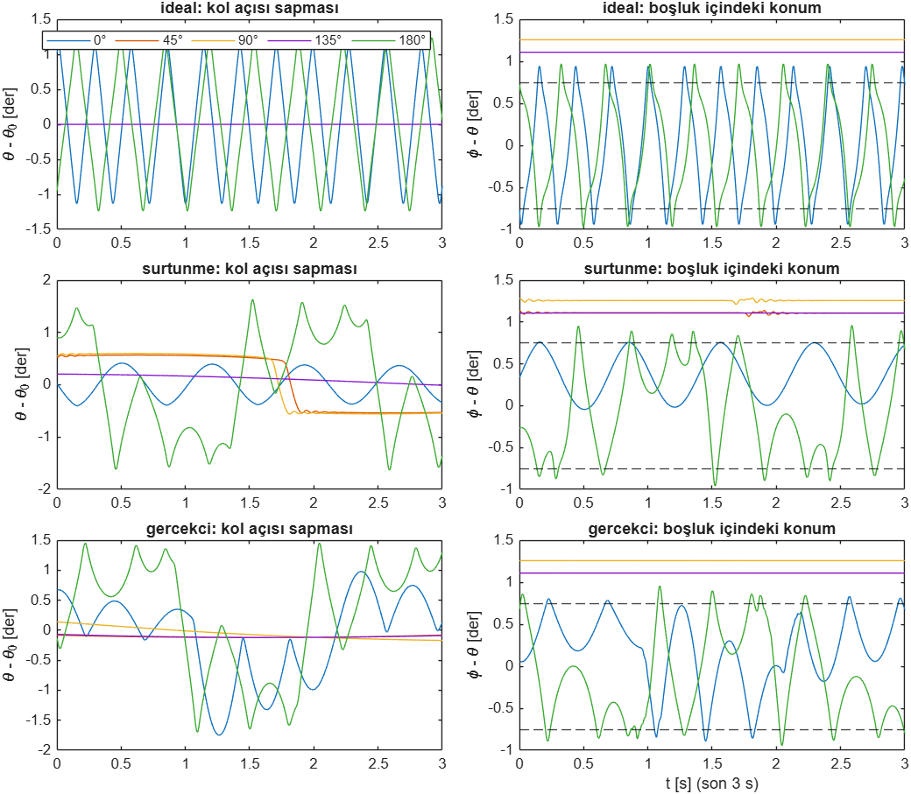
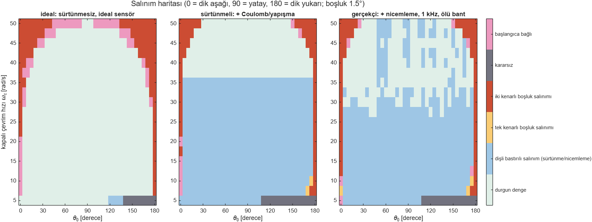
simulasyon/kol_benzetim.m, parametreler.m, kararlilik_kontrol.m, tek_deneme.m, harita.m, ic_kontrol.m · sonuç: simulasyon/sonuclar_2026-10-18.mdParametre duyarlılığı (gerçekçi model)
Ölçüt: boşluk salınımının görüldüğü en uzak açı, 0° tarafında ve 180° tarafında.
| Değişken | Değer | ωc = 20 | ωc = 35 | ωc = 45 |
|---|---|---|---|---|
| Toplam boşluk | 0,5° | 0 / 6 | 0 / 6 | 7 / 6 |
| 1,5° (temel) | 0 / 0 | 6 / 1 | 13 / 14 | |
| 3° | 2 / 5 | 9 / 9 | ≥40 / ≥40 | |
| 5° | 2 / 6 | 22 / 22 | ≥40 / ≥40 | |
| Dişli sertliği | 3 N·m/rad | 4 / 3 | ≥40 / ≥40 | döngü kararsız |
| 30 N·m/rad | 2 / 3 | 1 / 6 | 7 / 12 | |
| Uç kütlesi | 0 g | 5 / 6 | 8 / 8 | 8 / 6 |
| 20 g | 3 / 3 | 0 / 1 | 12 / 13 | |
| 100 g | 0 / 3 | 3 / 4 | ≥40 / ≥40 |
- En güçlü düğme boşluk genişliği (monoton ve güçlü) → deneyde ayarlanabilir boşluklu kaplin.
- Uç kütlesinin etkisi tek yönlü değil: hafif kol yerçekimini azaltıyor ama dişli rezonansını yükseltiyor. Bandı iki boyutsuz sayı birlikte belirliyor: γ = mgℓ sinθ0/(Ksr) ve ρ = ωc/ωrez.
- Motor yeterliliği: JGA25-370 1:34 ile 50 g uç, 3° boşluk, ωc = 45'te RMS tork 0,22 N·m (motor doyumda, ısınır); 20 g uçta RMS 0,12. Seçilen JGB37-520 1:30 (durma 0,49 N·m) rotoru daha büyük olduğundan ωc ≈ 35 rad/s ile çalışılmalı.
Boyutsuz harita
24 düzenek (uç kütlesi 0/20/50/100 g × toplam boşluk 1,5/3/5° × Ks 10/30) γ–ρ düzlemine işlendi. Sınır noktaları dar bir şeritte toplanıyor: düzenekler arası 2–3 kat, γ ekseninde 100 katlık aralığa karşı. Ölçekleme yasası (ideal model): γsınır ≈ 3ρ³.
| ρ | 0,13 | 0,18 | 0,23 | 0,28 | 0,33 | 0,38 |
|---|---|---|---|---|---|---|
| γsınır medyan, ideal | 0,006 | 0,017 | 0,035 | 0,066 | 0,14 | 0,28 |
| 3ρ³ | 0,0066 | 0,0175 | 0,036 | 0,066 | 0,108 | — |
| γsınır medyan, gerçekçi | 0,006 | 0,012 | 0,022 | 0,054 | 0,12 | 0,20 |
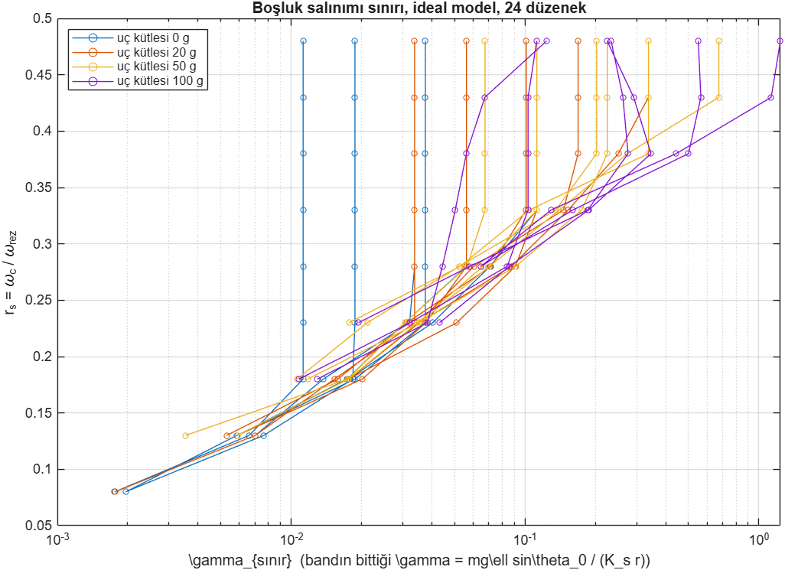
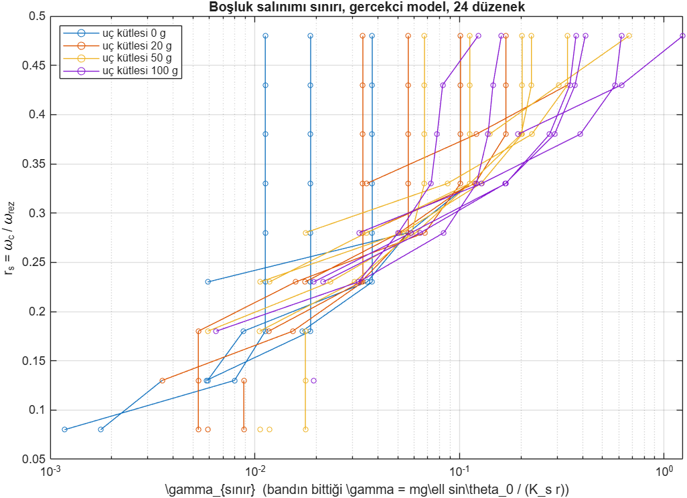
simulasyon/duyarlilik.m, ince_tarama.m, motor_kontrol.m, motor_jgb37.m, boyutsuz_harita.m, boyutsuz_sinir.m · kayıtlar: duyarlilik_log.txt, boyutsuz_*_log.txtLiteratür sonucunun yeniden üretimi: Ghaffari ve Mohammadiasl 2013
Neden bu makale
En yakın çalışma: iki kütleli model, dişli boşluğu, P–PI kaskat kontrol ve tanımlama fonksiyonuyla (DF) kalıcı çevrim öngörüsü; deneyle doğrulanmış. Tek eksiği bu çalışmanın katkısının tam yeri: eksen yatay, yerçekimi yok.
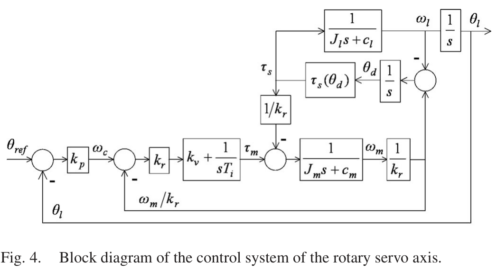
Şekil 7 ve 8: iki rejimin benzetimi
Kalibre edilmiş tek parametre kümesiyle (viskoz sürtünme 0, temas sönümü ξ = 0,0135, kp = 11,67, kv = 20) iki rejim de yeniden üretildi.
| Makale (şekilden) | Bu model | Fark | |
|---|---|---|---|
| Şekil 7 (rezonans çevrimi), frekans | ≈ 10,3 Hz | 10,10 Hz | −%2 |
| Şekil 7, θd genliği | ≈ 1,05° | 1,08° | +%3 |
| Şekil 7, burulma genliği | ≈ 1,0° | 0,96° | −%4 |
| Şekil 8 (çarpma çevrimi), frekans | ≈ 2,4 Hz | 2,61 Hz | +%9 |
| Şekil 8, θd | ±0,10°'de düzleşiyor | ±0,12°'de (= δ) düzleşiyor | — |
| Şekil 8, hızlar | ±0,2 rpm testere dişi | aynı biçim, ±0,22 rpm | — |
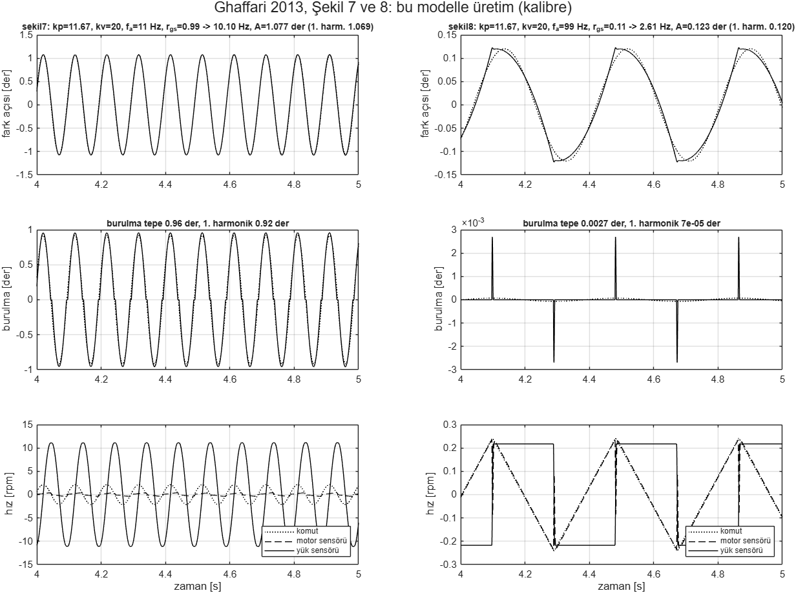
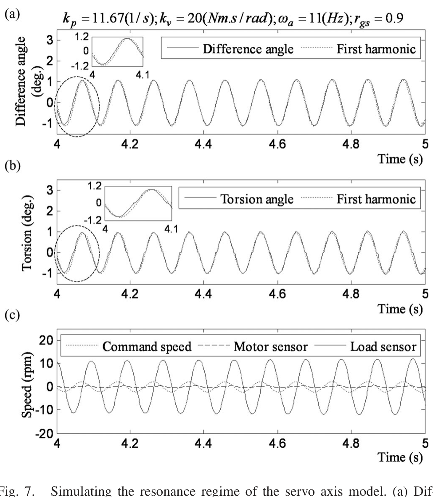
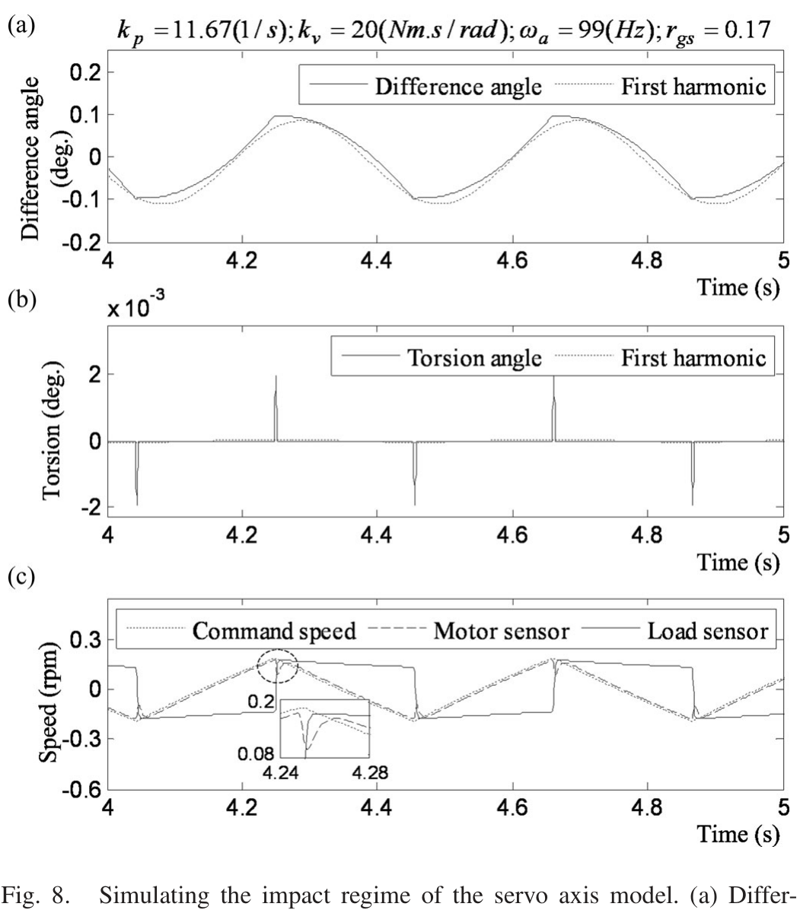
Duyarlılıktan çıkanlar
- Makalenin benzetimi viskoz sürtünmesiz. Döner tablanın sürtünme değerleriyle Şekil 7 tutmuyor (−%14 frekans, −%59 genlik); sürtünme sıfır ve küçük bir temas sönümüyle (ξ ≈ 0,013–0,015) tutuyor.
- rgs ≈ 1 yakınında genlik sönüme çok duyarlı (sönümsüz 5,3°, ξ = 0,01'de 1,4°), frekans ise 10,0–10,7 Hz'de kalıyor. Sınıflandırma ve sınır öngörüsünde frekans genlikten daha sağlam bir ölçüt.
- Çarpma rejiminde sonuç başlangıç koşuluna bağlı: kalıcı çevrim ile boşluk içi denge aynı parametrelerde birlikte var. Bu yüzden her nokta birden fazla başlangıç sapmasıyla koşuldu.
ghaffari2013.m, ghaffari_param.m, ghaffari_duyarlilik.m, sonum_tarama.m, ghaffari_sekil78.m · sonuç: sekil78_sonuclar.md (hepsi simulasyon/4a_ghaffari/)Döner tabla deneyi: Şekil 11 ve Tablo I
Makalenin deney düzeneğinin (döner tabla) parametreleriyle kp taraması (kv = 20) ve kv taraması (kp = 11,6) yapıldı. Her kazanç üç başlangıç sapmasıyla (0,05°, 1°, 3°) koşuldu. Tam DF'de çevrim frekansı G(jω)H(jω)'nin −180° faz geçişinden, gereken DF kazancı n = −1/Re{GH}'den bulundu.
| Karşılaştırma | Bu çalışma (11a / 11b) | Makale, Tablo I | Durum |
|---|---|---|---|
| Tam DF − deney, ortalama mutlak hata | %20,2 / %22,1 | %19,6 / %21,4 | üretildi |
| Sürtünmesiz benzetim − makalenin sürtünmesiz benzetimi | kp 6,7–18,3: ≤ 0,2 Hz | — | üretildi |
| Sürtünmeli benzetim − deney | %18,3 / %19,5 | %2,4 / %3,3 | üretilemedi (aşağıda) |
| Aynısı, motor tork sınırı 360 N·m ile | %3,9 / %3,9 | %2,4 / %3,3 | ayarlanmış, öngörü değil |
DF frekansları noktası noktasına aynı: kp = 6,7 / 8,3 / 10 / 11,7 / 13,3 için 6,03 / 8,99 / 11,31 / 13,23 / 14,81 Hz (makale 6,0 / 9,0 / 11,3 / 13,1 / 14,8).
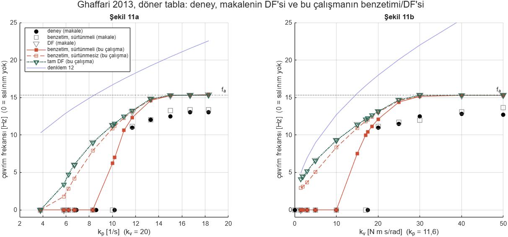
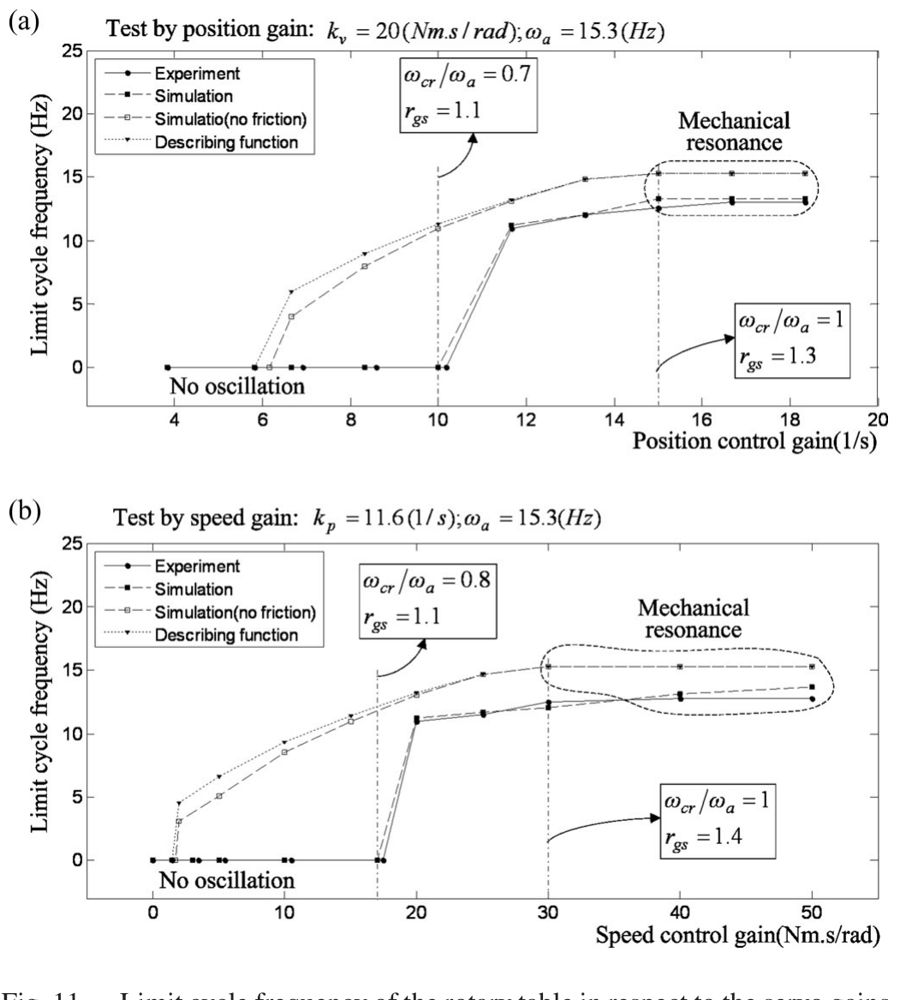
Sürtünmeli uyum ve köprü
Sürtünmeli benzetim neden doğrudan tutmadı
- Salınımın başladığı kazanç tutuyor (model kp = 10, deney 10,2–11,7 arası).
- Yüksek kazançta doyma tutmuyor: deney ≈ 13 Hz'de kararlı bir çevrimde kalıyor, model karşı-rezonansa (15,3 Hz) gidip büyüyor. Nedeni yapısal: kp ≥ 15'te doğrusal kısım kararsız; Coulomb sürtünmesi sabit bir tork olduğundan üstel büyümeyi sınırlayamaz. Makale genliği sınırlayan unsuru vermiyor ("sürtünmeler deneysel izlere göre optimize edildi").
- Ek deneme, motor tork sınırı: Tmax = 360 N·m'de hata %3,9'a iniyor. Bu değer aynı deney verisine ayarlanmış tek bir parametre; öngörü değil, makaledeki motorun gerçek tepe torkuyla uyumu doğrulanmadı. Bu çalışmanın düzeneğinde aynı rolü DRV8874'ün akım sınırı oynayacak; bu yüzden kalibrasyona akım/tork sınırı ölçümü eklendi.
Köprü: bu çalışmanın kol modeli Ghaffari'nin modeliyle aynı sonucu veriyor
Kendi kol modelimiz (kol_benzetim.m) yerçekimi kapatılıp aynı P–PI ile koşuldu:
| Durum | ghaffari2013.m: f / θd genliği | kol_benzetim.m (g = 0) |
|---|---|---|
| Şekil 7 (kalibre), rgs 0,99 | 10,10 Hz / 1,077° | 10,10 Hz / 1,078° |
| Şekil 8 (kalibre), rgs 0,11 | 2,61 Hz / 0,123° | 2,60 Hz / 0,123° |
| Tabla, sürtünmesiz, kp 8,3 | 7,88 Hz / 0,067° | 7,87 Hz / 0,067° |
| Tabla, sürtünmesiz, kp 11,7 | 13,09 Hz / 0,194° | 13,09 Hz / 0,194° |
Fark ≤ 0,01 Hz. Böylece bu çalışmanın modeli, yerçekimsiz limitte, deneyle doğrulanmış bir makaleye karşı doğrulanmış oldu.
Kendi düzeneğimiz Ghaffari çerçevesine düşüyor mu?
Hafif kolda (A, R = 0,17) DF frekansı benzetimden 2–5 kat yüksek çıktı: dişliler zamanın yalnız %7–47'sinde temas ediyor, iletilen tork kısa darbelerden oluşuyor ve DF'nin "doğrusal kısım üst harmonikleri süzer" varsayımı bozuluyor. R büyütülünce (JL = 2JM) benzetim/DF frekans oranı 0,76–0,94'e çıkıyor. Önerilen D düzeneğinin R ≈ 1 seçilmesinin nedeni bu.
ghaffari_tabla.m, ghaffari_df.m, tork_siniri.m, kopru_7a.m, kopru_7b.m · sonuçlar: tabla_sonuclar.md, kopru_7a_log.txt, kopru_7b_sonuclar.mdÖnerilen katkı: yerçekimli iki girişli DF
Fikir
Ghaffari dişlideki sapmayı sıfır ortalamalı bir sinüs sayıyor. Yerçekimi dişliyi bir yüze bastırdığı için sapmanın ortalaması sıfır değil: δ = B + A sin ωt. İki koşul birlikte çözülür:
- DC dengesi: dişlinin ilettiği ortalama tork yükü taşır, n0(a, b) = γ. Her genlik için ön sapma b = B/r buradan bulunur.
- Birinci harmonik: n1(a, b(a)) · L(jω) = −1. L(s) yerçekimsizken Ghaffari'nin G·H'siyle aynı.
Tek açı parametresi γ = mgℓ sin θ0 / (Ks r): yük torku / boşluğu kapatan yay torku. Yerçekimi sıfırsa Ghaffari'nin DF'si birebir geri gelir.
Ekler ve sağlamalar
- Temas sönümü: csδ̇ yalnız temasta etkili; birinci harmoniğe kosinüs bileşeni olarak girer. Dişli eşdeğer yay + sönümleyici olur: ke = Ksn1, ce = csh.
- Ön yüklü tork sınırı: doyum, aynı ölü bölge araçlarıyla ön yük u0 = mgℓ sin θ0 etrafında bir doyum kazancı olarak modellenir.
- Kararlılık her adımda kapalı çevrim kökleriyle denetlenir; yerçekimi doğrusallaştırılınca sarkaç modu da −180°'yi kestiği için tek faz geçişine bakmak yetmez.
- Sağlamalar 7/7: kapalı biçim n0, n1, h sayısal integralle aynı (7·10⁻¹⁰, 2·10⁻⁵); temas kopmuyorsa n1 = 1; b = 0'da Ghaffari'nin denklem 10'u; yerçekimsiz ve sönümsüz durumda
ghaffari_df.mile 4 basamak aynı; cs → 0 ve Tmax → ∞ limitleri.
yercekimli_df.m, yercekimli_df_testleri.m, yercekimli_karsilastirma.m · kayıt: yercekimli_log.txt · sonuç: yercekimli_sonuclar.mdKarşılaştırma: açı × kazanç düzleminde
Benzetim: açı 0–180° (5° adım) × rgs 0,3–1,3 (0,05 adım), her nokta üç başlangıç sapmasıyla. Kritik rgs: salınımın başladığı ve daha büyük kazançlarda süren en küçük kazanç. 0° ve 180°'de γ = 0 olduğundan DF kritik kazancı tanımsız; medyanların dışında.
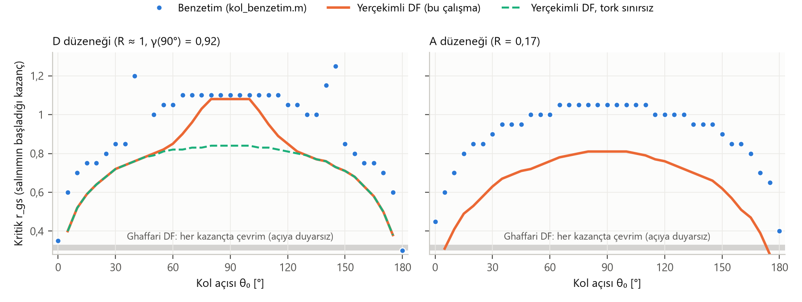
yercekimli_kritik_D.csv, yercekimli_kritik_A.csv.| Ölçüt | Hedef | D | A | Ghaffari DF (D / A) |
|---|---|---|---|---|
| B1: kritik kazanç hatası, medyan (en çok) | ≤ %20, Ghaffari'den ≥ 2× iyi | %19 (%42) | %27 (%58) | %81 / %79 |
| B2: açı yönünde sınır hatası, medyan | ≤ 5° | 15° | 20° | tanımsız |
| B3: çevrim frekansı, benzetim/DF medyan | sapma ≤ %15 | 0,89 | 0,94 |
Katkıların ayrışması (D, B1 medyanı): sönümsüz DF %30 → temas sönümüyle %24 → tork sınırıyla %19. A'da tork sınırı etkisiz (μ = 0,09), temas sönümü hatayı %55'ten %27'ye indiriyor.
- Hedeflenen iyileşme sağlandı: D'de B1 tutuyor, Ghaffari'den 4,3 kat iyi. Yerçekimli DF bastırma bölgesinin biçimini ve 90° etrafındaki simetrisini doğru veriyor.
- Hata sistematik ve temkinli yönde: DF çevrimi benzetimden daha düşük kazançta öngörüyor (en büyük fark 15–45°'de). Yani güvenli tarafta.
- A düzeneği: DF sınırın biçimini burada da veriyor, ama kritik kazancı her açıda düşük öngörüyor (medyan %27). Olası neden kısmi temastaki sönüm (A'nın temas sönüm oranı D'ninkinin iki katı); A için ayrıca sınanmadı.
Boyutsuz oran ve kontrolcü eşlemesi
Kaynaklarda aynı sembol farklı büyüklükleri gösterebildiği için tek bir tanım takımı kullanıldı ve her kaynağın değerleri bu tanımlara çevrildi.
| Sembol | Tanım | Anlamı |
|---|---|---|
| R | JL / JM | Eylemsizlik oranı (Ghaffari'nin R'si) |
| rgs | √(kpkv / Ks) | Sertlik oranı (Ghaffari); C. Wang 2017'nin rs'si aynı |
| ρ | ωc / ωrez, ωrez = √(Ks/Jeff) | Bu çalışmanın ilk simülasyonlarındaki oran |
| γ | mgℓ sin θ0 / (Ks r) | Yerçekimi ön yükü / boşluğu kapatan temas torku (yeni) |
| φ | FC / (Ks r) | Coulomb sürtünmesi / temas torku |
| ζc | cs / (2√(KsJeff)) | Temas modunun sönüm oranı |
| μ | mgℓ / Tmax | Yerçekiminin motor torkundan aldığı pay |
Dönüşüm: rgs = ρ(JM + JL)/√(JMJL) = ρ(1 + R)/√R. R = 1'de rgs = 2ρ; R = 0,17'de 2,86ρ.
P–PI (Ghaffari, C. Wang, Sun) ↔ PID (bu çalışma)
u = KV(kpe − v) + KI∫(kpe − v)dt = (KVkp)e + (KIkp)∫e dt − KVv − KI(θM − θM,0)
| PID | P–PI karşılığı | Not |
|---|---|---|
| Kp | KVkp | rgs = √(Kp/Ks) her iki yapıda |
| Kd (motor hızından) | KV | Ghaffari'nin kv'si |
| Ki | KIkp | KI = 1/Ti |
| — | −KI(θM − θM,0) | P–PI'nin fazlası: motor açısına zayıf bir "yay"; bu çalışmanın ayarında etkisi küçük |
Kısaca KV ≈ Kd, kp ≈ Kp/Kd. Hafif kolda (A) PID'nin Kd'si hız döngüsü bant genişliğini de belirlediği için bu eşleme yalnız kaba bir yön gösterir.
simulasyon/4a_ghaffari/esleme_tablosu.mdKaynakların değerleri tek tabloda
Makalede verilenler düz, bu çalışmada hesaplananlar italik.
| Kaynak | R | fa | rgs | ρ | γ(90°) | ζc | μ | Gözlenen |
|---|---|---|---|---|---|---|---|---|
| Ghaffari 2013, Şekil 7 | 2,12 | 11 Hz | 0,99 | 0,46 | 0 | 0,024¹ | — | 10,3 Hz çevrim |
| Ghaffari 2013, döner tabla | 0,79 | 15,3 Hz | 1,17 / 1,33 | 0,58 / 0,66 | 0 | — | — | 15,3 Hz (rezonans) |
| C. Wang 2017, kp 50 | 24 | 15,8 Hz | 0,66 | 0,13 | 0 | — | 0 | 10,2 Hz çevrim |
| C. Wang 2017, kp 150 | 24 | 1,15 | 0,23 | 0 | — | 0 | 15,6 Hz | |
| Sun 2023, Kp 20 | 0,70 | 38,9 Hz | ≈ 0,15² | ≈ 0,07 | 0,024 | — | 0,04 | salınım yok |
| Sun 2023, Kp 50 | 0,70 | ≈ 0,23² | ≈ 0,11 | 0,024 | — | 0,04 | 90°'de ≈ 5°, 9 Hz | |
| Bu çalışma, A | 0,17 | 20,5 Hz | 0,5–0,9 | 0,18–0,32 | 0,17 | 0,14 | 0,09 | Bölüm 5 |
| Bu çalışma, D | 1,0 | 8,4 Hz | 0,5–0,9 | 0,25–0,45 | 0,92 | 0,075 | 0,49 | Bölüm 5 |
¹ Makalede yok; Şekil 7'nin yeniden üretiminde kalibre edildi. ² Sun 2023 hız döngüsünün PI katsayılarını vermiyor; kv gözlenen 9 Hz'den Ghaffari'nin denklem 12'siyle geri çıkarıldı, yalnız büyüklük mertebesi.
Gözlemler
- γ'nın tek yönlü, açıya bağlı karşılığı literatürde yok. Ghaffari'nin ön yükü yaylı anti-boşluk mekanizmasından gelen simetrik bir iç gerilim; C. Wang 2017'de yük torku sıfır.
- Sun 2023 ile tutarlılık: ağır yüke rağmen γ(90°) ≈ 0,02–0,05; yerçekimli DF bu ön yükte bastırmanın neredeyse olmadığını söylüyor. 90°'de bile salınım görmeleri bununla tutarlı. Yerçekiminin etkisini belirleyen yükün büyüklüğü değil, yük / (boşluk × sertlik) oranı.
- Ölçek: bu çalışmanın düzenekleri γ ekseninde Sun 2023'ün 7–40 katı.
- Temas sönümünü hiçbir kaynak raporlamıyor; düzenekte tanılanması gerekiyor.
Rejim ayrımı
Benzetimde ve deneyde aynı zaman serisine (kol açısının hedeften sapması; deneyde AS5600'ün ölçtüğü büyüklük) aynı ölçütlerle uygulanan bir sınıflandırıcı yazıldı. Sinyal, ortalamanın iki yanındaki ardışık geçişlerle yarım periyotlara bölünür; her birinden bir genlik ve bir süre alınır.
| Sınıf | Koşul (karar sırasıyla) |
|---|---|
| 4 kararsız | Genlik A > Amax, ya da zarf > %5 büyüyor ve büyüme yavaşlamıyor |
| 0 denge | A < Amin ve başlangıçta Amin'i aşan yarım periyot sayısı < 2 |
| 1 sönümlü titreşim | A < Amin ama başlangıçta ≥ 2 yarım periyot eşiğin üstünde; ya da zarf < −%5 |
| 2 zorlanmış cevap | Zorlama var ve gücün ≥ %80'i zorlama frekansı ve harmoniklerinde (Hann pencereli FFT) |
| 3 kalıcı çevrim | Zarf sabit (ya da yavaşlayarak büyüyor), periyot ve genlik değişim katsayıları < 0,1 |
| 5 düzensiz | Salınım sürüyor, zarf sabit, periyodik değil |
Amin ölçüm eşiği: benzetimde boşluğun %10'u, deneyde AS5600 çözünürlüğüne göre. Eşiğin altındaki titreşim "yok" sayılır, çünkü deneyde de görülemez. Her nokta birden fazla başlangıç sapmasıyla koşulur; sınıflar farklı çıkarsa nokta "başlangıç koşuluna bağlı" işaretlenir.
Doğrulama (7/7)
| Durum | Beklenen | Sonuç (0,05° / 0,5° / 2°) |
|---|---|---|
| Döner tabla, kp = 3,8 | denge | denge × 3 |
| Boşluksuz, kp = 8,3 | sönümlü titreşim | denge¹ / sönümlü / sönümlü |
| Boşluksuz + 3 Hz yük bozucusu | zorlanmış cevap | zorlanmış (3 Hz) × 3 |
| Şekil 7 (kalibre) | kalıcı çevrim | kalıcı çevrim (10,1 Hz) × 3 |
| Döner tabla, kp = 15, Tmax 360 | kalıcı çevrim | kalıcı çevrim (12,6 Hz) × 3 |
| Döner tabla, sürtünmesiz, kp = 18,3 | kararsız | kararsız × 3 |
| Şekil 8 (kalibre) | kalıcı çevrim | çevrim / çevrim / denge² |
¹ İlk aşma eşiğin altında: titreşim ölçülebilir değil, "denge" doğru. ² Gerçek birlikte var olma: büyük başlangıçta sistem boşluğun içinde duruyor.
rejim_sinifla.m, rejim_testleri.m, zorlanmis_cevap.m · sonuç: rejim_siniflandirma.mdYerçekimli düzenekte zorlanmış cevap ve iki kararlılık
D düzeneği, P–PI, kola sinüs yük bozucusu.
| Durum | rgs | Bozucu | Sınıf | Genlik | f |
|---|---|---|---|---|---|
| 90°, küçük bozucu | 0,6 | 0,03 N·m, 3 Hz | zorlanmış cevap | 0,35° | 3,00 Hz |
| 90°, ön yükü aşan bozucu | 0,6 | 0,30 N·m, 3 Hz | zorlanmış cevap | 8,3° | 3,00 Hz |
| 0°, bozucusuz | 0,6 | yok | sönümlü titreşim | 0,18° | 1,30 Hz |
| 0°, güçlü çevrim + bozucu | 0,9 | 0,03 N·m, 4,5 Hz | kalıcı çevrim | 5,2° | 6,43 Hz |
90°'de yerçekimi ön yükü küçük bozucuda temasın kopmasını önlüyor: cevap doğrusal ve yalnız zorlama frekansında. 0°'de kol, küçük sapmada boşluğun içinde sarkaç gibi asılı kalıyor. Zorlama frekansı çevrimin harmoniklerinden uzak seçilmeli; yoksa zorlanmış cevap ile çevrim ayrılamıyor (6,43 Hz'lik çevrim, 3 Hz bozucunun 2. harmoniğine yakın olduğunda "zorlanmış" sayıldı).
İki kararlılık (yerçekimli DF'nin öngörüsü)
90°, tork sınırsız; bozucu DF'nin çevrim frekansında 3 s uygulanıp kesiliyor.
| rgs | DF | Bozucu 0 / 0,02 / 0,05 / 0,10 / 0,20 / 0,40 N·m |
|---|---|---|
| 0,88 | çevrim, 6,60 Hz | hepsi sönüyor (DF'nin kazanç hatası) |
| 0,95 | çevrim, 7,12 Hz | sönüyor × 3 / çevrim 7,08 Hz / çevrim / çevrim |
| 1,00 | çevrim, 7,48 Hz | çevrim / sönüyor / çevrim / çevrim / çevrim / çevrim |
rgs 0,95'te denge küçük sarsıntıya karşı kararlı, 0,10 N·m'lik sarsıntı kalıcı çevrimi başlatıyor; frekans DF'ninkiyle %0,6 farklı. Olgu gerçek, ama DF'nin öngördüğünden dar bir bölgede.
Düzenek seçenekleri ve sensör etkileri
Köprü deneyi (Bölüm 4) ilk düzeneğin (A) kolunun motora göre çok hafif olduğunu gösterdi: R = JL/JM = 0,17, Ghaffari'nin düzeneklerinde 0,8–2,1. Beş düzenek aynı ölçütlerle karşılaştırıldı. Ortak ayar: P–PI, 2r = 3°, Ks = 10 N·m/rad (tahmin), gerçek tork sınırı, her nokta üç başlangıç sapmasıyla.
| Düzenek | R | fa | mgℓ | mgℓ/Tmax | Ghaffari DF: benzetim/DF frekansı (rgs 0,5 / 0,7 / 0,9) | |
|---|---|---|---|---|---|---|
| A | JGB37-520 1:30, 20 g çubuk + 20 g uç | 0,17 | 20,5 Hz | 0,044 | 0,09 | 0,37 / 0,46 / 0,52¹ |
| B1 | A + dengelenmiş ek eylemsizlik, JL = JM | 1,0 | 8,4 Hz | 0,044 | 0,09 | 0,72 / 0,85 / 0,90 |
| B2 | A + dengelenmiş ek eylemsizlik, JL = 2JM | 2,0 | 5,9 Hz | 0,044 | 0,09 | 0,76 / 0,89 / 0,94 |
| C | JGB37-520 1:10, aynı kol | 1,5 | 20,5 Hz | 0,044 | 0,27 | 0,63 / 0,76 / 0,83 |
| D | A + ağır uç kütlesi (≈ 153 g), JL = JM | 1,0 | 8,4 Hz | 0,240 | 0,49 | 0,72 / 0,90 (B1 ile aynı) |
¹ Temas sönümsüz DF ile. Temas sönümü eklenince A'nın oranı 0,94'e çıkıyor (Bölüm 5); bozulmanın büyük kısmı R'den değil eksik temas sönümünden.
Açı × kazanç haritaları (ideal sensör, sürekli kontrol)
Açı: 0° sarkık, 90° yatay, 180° dik. * sonucun başlangıç koşuluna bağlı olduğunu gösterir.
| rgs \ açı | 0° | 10° | 20° | 30° | 45° | 60° | 90° | 135° | 180° |
|---|---|---|---|---|---|---|---|---|---|
| 0,3 | s* | · | · | · | · | · | · | · | · |
| 0,5 | C* | · | · | · | · | · | · | · | C |
| 0,7 | C* | ?* | · | · | · | · | · | · | C |
| 0,9 | C* | C | C* | ?* | s* | · | · | s* | C |
| 1,1 | C* | C | C | C | C* | C* | C* | C | C |
| 1,3 | C* | C | C | C | C | C | C | C | C |
| rgs \ açı | 0° | 10° | 20° | 30° | 45° | 60° | 90° | 135° | 180° |
|---|---|---|---|---|---|---|---|---|---|
| 0,3 | C* | · | · | · | · | · | · | · | C |
| 0,5 | C | C* | s* | · | · | · | · | · | C |
| 0,7 | C | C | C | C | C* | C* | C* | C* | C |
| 0,9 | C | C | C | C | C | C | C | C | C |
| 1,1 | C | C | C | C | C | C | C | C | C |
| 1,3 | C | C | C | C | C | C | C | C | C |
| rgs \ açı | 0° | 10° | 20° | 30° | 45° | 60° | 90° | 135° | 180° |
|---|---|---|---|---|---|---|---|---|---|
| 0,3 | ?* | · | · | · | · | · | · | · | s |
| 0,5 | ?* | ?* | s* | s* | · | · | · | · | C |
| 0,7 | ?* | C | C | C | C* | C* | C* | C* | C |
| 0,9 | C | C | C | C | C | C | C | C | C |
| 1,1 | C | C | C | C | C | C | C | C | C |
| 1,3 | C | C | C | C | C | C | C | C | C |
| rgs \ açı | 0° | 10° | 20° | 30° | 45° | 60° | 90° | 135° | 180° |
|---|---|---|---|---|---|---|---|---|---|
| 0,3 | C* | · | · | · | · | · | · | · | C |
| 0,5 | C* | ?* | s* | · | · | · | · | · | C |
| 0,7 | C* | C | C | ?* | · | · | · | · | C |
| 0,9 | C | C | C | ?* | ?* | ? | s | ?* | C |
| 1,1 | C | C | C | C | ? | ? | ?* | ? | C |
| 1,3 | C | C | C | C | C | ? | ? | ? | C |
| rgs \ açı | 0° | 10° | 20° | 30° | 45° | 60° | 90° | 135° | 180° |
|---|---|---|---|---|---|---|---|---|---|
| 0,3 | s* | · | · | · | · | · | · | · | ? |
| 0,5 | C* | · | · | · | · | · | · | · | C |
| 0,7 | C* | C* | s* | · | · | · | · | · | C |
| 0,9 | C* | C | C | ?* | s | s | s* | s | C |
| 1,1 | C* | C | C | C | ? | C | C | ?* | C |
| 1,3 | C* | C | C | ? | s | ?* | ? | X* | C |
Sensör ve sürtünme eklenince
1 kHz kontrol, AS5600 12 bit + 1 örnek gecikme, enkoder kenar zamanlaması, Coulomb ve yapışma sürtünmesi, sürücü ölü bandı.
| rgs \ açı | 0° | 10° | 20° | 30° | 45° | 60° | 90° | 135° | 180° |
|---|---|---|---|---|---|---|---|---|---|
| 0,3 | s* | · | · | · | · | · | · | · | ? |
| 0,5 | C* | · | · | · | · | · | · | · | ?* |
| 0,7 | C* | s* | s | · | · | s | · | · | C |
| 0,9 | C* | C | ?* | s | · | s | s* | · | C |
| 1,1 | C | C | C | C | C* | C* | ?* | C* | C |
| 1,3 | C | C | C | C | C | C | C | C | C |
| rgs \ açı | 0° | 10° | 20° | 30° | 45° | 60° | 90° | 135° | 180° |
|---|---|---|---|---|---|---|---|---|---|
| 0,3 | C* | · | · | · | · | · | · | · | ? |
| 0,5 | C* | ? | · | · | · | ? | · | · | ?* |
| 0,7 | C* | s* | s* | · | ? | · | ? | · | C |
| 0,9 | X* | C | C* | C* | s | s* | s | s | C |
| 1,1 | C | C | C | C | ?* | s | · | ? | C |
| 1,3 | C | C | C | ?* | ? | ?* | C | ?* | C |
| Düzenek | İdeal: çevrimli nokta, doyum | Sensör (ardışık fark hızı) | Sensör + sürtünme | Kenar zamanlaması | Kenar + sürtünme |
|---|---|---|---|---|---|
| A | 26/54, %7 | 25/54, %24 | 20/54, %20 | 26/54, %7 | 23/54, %6 |
| B1 | 41/54, %24 | 40/54, %29 | 33/54, %26 | — | — |
| B2 | 39/54, %21 | 38/54, %25 | 34/54, %24 | — | — |
| C | 25/54, %22 | 17/54, %64 | 17/54, %71 | — | — |
| D | 20/54, %16 | 18/54, %25 | 20/54, %17 | 19/54, %17 | 19/54, %14 |
Değerlendirme
- Hipotez beş düzenekte de görülüyor: 0° ve 180°'de salınım, ara açılarda kazanç arttıkça daralan bir bastırma bölgesi. Ne kadar geniş bir kazanç aralığında görüldüğü düzeneğe bağlı.
- B1, B2: DF geçerli, ama bastırma yalnız rgs ≤ 0,5'te; dengelenmiş eylemsizlik salınımın dinamik torkunu büyütüyor, mgℓ aynı kalıyor. Hipotezi sınamak için en zayıf seçenekler.
- C elendi: sensörlerle haritada düzensiz ve kararsız noktalar yayılıyor, doyum %64–71 (1:10'da enkoderin kol tarafı çözünürlüğü 3 kat kaba, tork payı dar).
- D: yerçekimsiz davranışı B1 ile aynı (DF geçerli), yerçekimli haritası A'ya benziyor (bastırma rgs 0,5–1,1 boyunca). Bedeli tork payı: 90°'de yerçekimi motor torkunun yarısını alıyor.
- Asıl bozulma hız kestiriminden: ardışık farkta bir enkoder sayımı 1 kHz'te 4,7 rad/s'lik bir hız basamağı; doyum A'da %7'den %24'e çıkıyor. Kenar zamanlamasıyla haritalar ideal duruma yaklaşıyor. (Dijital ikizde bu soru gözlemciyle yeniden ele alındı, Bölüm 9.)
4a_ghaffari/secenekler.m, secenek_duzenek.m, sensor_7c.m, harita_html.py · sonuçlar: secenekler_sonuclar.md, sensor_7c_sonuclar.md, secenekler_log.txt, sensor_7c_log.txtDijital ikiz: Simulink ve Simscape
Aynı model üç kez kuruldu: vektörize betik (taramalar), Simulink (betiğin birebir karşılığı) ve Simscape (fiziksel bloklarla, denklemler elle yazılmadan). Simulink/Simscape modelleri betiğin bağımsız sağlaması oldu; deney kaynakları, sanal firmware kaydı ve sistem tanılama bu modellerde yapıldı.
| Model | Ne | Rolü |
|---|---|---|
kol_model.slx | Simulink: tesis (MATLAB Function) + sensör + P–PI | kol_benzetim.m ile bit düzeyinde aynı (5/5 referans hücre). Referans hücreler D düzeneği ve P–PI. |
sm_kol_model.slx | Simscape mekanik: eylemsizlikler, sönümleyiciler, dişli teması Rotational Hard Stop ile | Rejim sınıfı 10/10 aynı, genlik farkı ≤ %0,3: betiğin modelini farklı bir modelleme yoluyla doğruluyor. |
sm_motor_model.slx | + motorun elektrik tarafı, DRV8874 sürücüsü, firmware modları | Sistem tanılama ve deney tasarımı bu modelde; salınım sınırı taraması aynı açı × rgs çerçevesinde. |
Neden önce Simulink, sonra Simscape
Simulink'in hazır Backlash bloğu sertliği olmayan kinematik bir boşluk; dişli teması (ölü bölge + Ks yayı + cs sönümü, çekme yok) onunla kurulamıyor. Bu yüzden kol_model'de tesis, betikteki denklemlerle aynı bir MATLAB Function bloğu. Simscape modelinde ise temas hazır fiziksel bloklarla (Hard Stop) kuruldu; bu, denklemleri bir kez daha elle yazmadan bağımsız bir sağlama sağlıyor.
Referans hücreler (D düzeneği, P–PI, ideal sensör, T = 8 s)
| # | Açı | rgs | Başlangıç | Ek koşul | Betik sonucu |
|---|---|---|---|---|---|
| 1 | 90° | 1,20 | 1° | düzensiz salınım, A 2,06°, 8,0 Hz | |
| 2 | 60° | 0,50 | 1° | denge | |
| 3 | 30° | 0,80 | 0,2° | 6,31 Hz sarsıntı, 0,10 N·m, t < 1 s | sönüyor |
| 4 | 90° | 0,95 | 0,2° | tork sınırsız | denge |
| 5 | 90° | 0,95 | 5° | tork sınırsız | kalıcı çevrim, A 8,14°, 7,1 Hz |
Hücre 4 ve 5, Bölüm 7'daki iki kararlılığın aynı hücredeki iki yüzü.
Tasarım ayrıntıları (blok ve parametre tabloları, çözücü ayarları, MATLAB Function bloklarının tam kodu) Ek A'da; .slx dosyaları ve kuran betikler bu PDF'e gömülü.
kol_model_kur.m, sm_model_kur.m (.slx bunlardan üretilir) · bloklar: blok_tesis.m, blok_sensor.m, blok_kontrolcu.m, blok_ayrik.m, blok_yuk.m · referans: referans_uret.m → referans.mat (hepsi simulasyon/simulink/)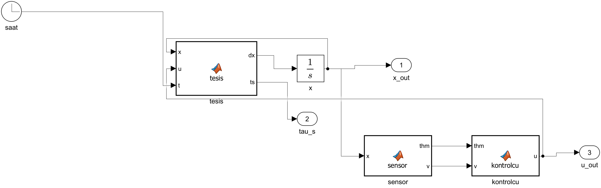
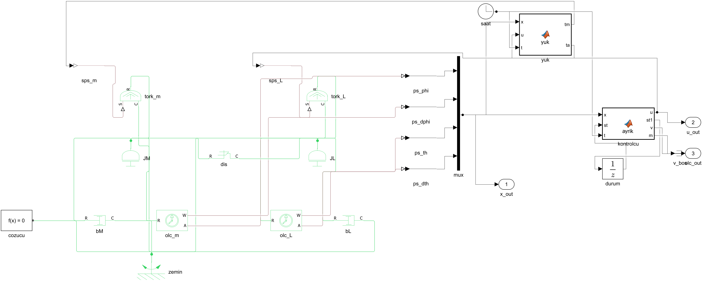
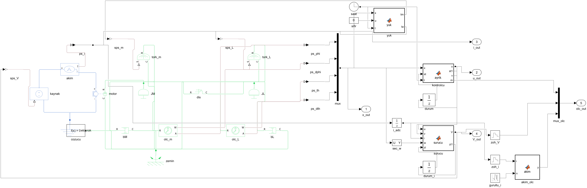
Çapraz doğrulama sonuçları
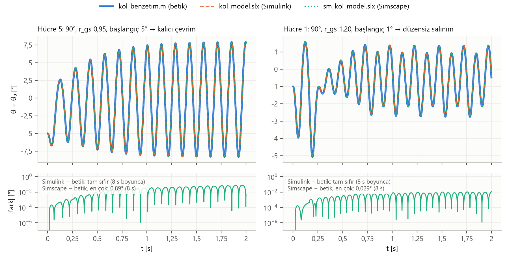
dogrula_2_log.txt ve dogrula_5a_log.txt ile aynı.Simulink (kol_model) − betik
| Hücre | Sınıf (slx / betik) | Genlik | Frekans | En büyük |Δθ| |
|---|---|---|---|---|
| 1 (90°, 1,20) | düzensiz / düzensiz | 2,056° / 2,056° | 8,04 / 8,04 Hz | 0 |
| 2 (60°, 0,50) | denge / denge | — | — | 0 |
| 3 (30°, 0,80) | sönümlü / sönümlü | 0,001° | 3,76 / 3,76 Hz | 1,7·10⁻¹⁰° |
| 4 (90°, 0,95, 0,2°) | sönümlü / sönümlü | — | — | 0 |
| 5 (90°, 0,95, 5°) | çevrim / çevrim | 8,135° / 8,135° | 7,08 / 7,08 Hz | 0 |
Tek fark sarsıntılı hücrede; sarsıntının t = 1 s'de kesildiği anın kayan nokta zamanlamasından geliyor. Gerçekçi sensör katmanıyla (1 kHz, AS5600 12 bit + gecikme, enkoder, hız filtresi, Stribeck, ölü bant) da 5 hücrede sınıf, genlik ve frekans aynı; θ(t) farkı en çok 1e-12°.
Simscape (sm_kol_model) − betik
| Hücre | Sınıf, ideal | Genlik, ideal | Frekans, ideal | Sınıf, gerçekçi |
|---|---|---|---|---|
| 1 | aynı (düzensiz) | 2,058° / 2,056° | 8,04 / 8,04 Hz | aynı |
| 2 | aynı (denge) | — | — | aynı |
| 3 | aynı (sönümlü) | 0,001° | 4,16 / 3,76 Hz³ | aynı |
| 4 | aynı (sönümlü) | — | — | aynı |
| 5 | aynı (çevrim) | 8,143° / 8,135° | 7,07 / 7,08 Hz | aynı (8,209° / 8,235°) |
³ Genliği 0,001° olan, sönmüş bir sinyalin frekansı; anlamlı değil.
Rejim sınıfı 10/10 aynı; salınan hücrelerde genlik ve frekans farkı %0,3'ün altında. Kalan fark sayısal: Simscape sabit adımlı çözücüde temas modunu adım boyunca sabit tutuyor, betikteki RK4 her ara aşamada yeniden değerlendiriyor. Fark temas anlarında açılıyor ve adım 4 kat küçülünce yaklaşık 4 kat küçülüyor (hücre 2: 6,6e-4° → 1,7e-4°).
Aynı kolun Simscape Multibody ile kurulmuş 3B modeli ve onun bu 5 hücredeki çapraz doğrulaması Ek B'de.
dogrula_2.m → dogrula_2_log.txt, dogrula_3.m → dogrula_3_log.txt, dogrula_5a.m → dogrula_5a_log.txtElektrik modeliyle salınım sınırı
sm_motor_model.slx ile aynı açı × rgs çerçevesinde tarama: 3 açı × rgs 0,70–1,40 × 3 başlangıç sapması, iki sensör düzeyi. Sınır tanımı: sınıf ≥ 3 ve genlik > 0,5°. Kritik rgs (30° / 60° / 90°):
| Model | İdeal sensör | Gerçekçi sensör |
|---|---|---|
| İdeal tork kaynağı, sınır 0,49 N·m | 0,85 / 1,05 / 1,10 | 0,90 / 1,25 / 1,30 |
| İdeal tork kaynağı, sınır 0,43 N·m | 0,90 / 1,10 / 1,10 | 1,00 / 1,35 / >1,40 |
| Elektrik modeli, firmware modu 1, 2, 3 | 0,90 / 1,10 / 1,10 | 1,00 / 1,35 / 1,40 |
- Firmware modu salınım sınırını değiştirmiyor. Sınırı kaydıran tek elektrik etkisi DRV8874'ün akım sınırı (0,49 → 0,43 N·m, sınır +0,05–0,10). Bu, yerçekimli DF karşılaştırmasında bulunan "tork sınırı çevrimi söndürüyor" sonucunun (Bölüm 5, 9) elektrik modelindeki karşılığı.
- İdeal sensörlü sütun Bölüm 5'teki benzetim eğrisiyle aynı bölgede (D, 90°'de 1,10).
- Gerçekçi sensör sınırı 0,1–0,25 yukarı itiyor (nicemleme, gecikme, 1 ms örnekleme, sürtünme). Deneydeki ölçümün bu sütunla karşılaştırılması gerekiyor; Bölüm 10'daki öngörü doğrulaması bunu yapıyor.
tarama_5b.m, analiz_5b.m → tarama_5b_log.txt · ayrıntı: simulasyon/simulink/README.md, adım 5bDeney kaynakları, sanal firmware kaydı ve hız kestirimi
Deney kaynakları
Firmware'in üreteceği uyarım sinyali kontrolcü bloğunun içinde, Ts örneklemeli. Yer: referansa eklenir, tork komutuna eklenir ya da açık çevrim (kontrolcü kapalı, integral donuk). Şekil: basamak/darbe, doğrusal chirp, logaritmik chirp, sinüs. Serbest salınım: açık çevrim, sıfır uyarım ve başlangıç sapması. Kaynak kapalıyken model değişiklikten önceki hâliyle bit düzeyinde aynı.
- Kol aşağıdayken 10°'lik serbest salınım işe yaramıyor: yerçekimi torku (0,042 N·m) motorun yapışma sürtünmesinin (0,06 N·m) altında; motor kıpırdamıyor, kol yalnız boşluk içinde titreşiyor. 30°'de kol motoru da sürükleyerek gerçekten salınıyor.
Sanal firmware kaydı
Firmware'in 1 kHz'te kaydedeceği sinyaller ayrı bir çıkışta: θL (AS5600, 12 bit, bir örnek gecikmeli), φ (enkoder), v̂ (hız kestirimi), u (tork komutu), V (komut gerilimi), i (IPROPI → ESP32 ADC; basamak 0,46 mA, gürültü std 1,4 mA). Ölçüm − gerçek: θL rms 0,05–0,06°, φ en çok bir enkoder sayımı (0,27°), v̂ rms 0,04–0,11 rad/s, i rms 1,4–1,6 mA. Tanılama betikleri yalnız bu kaydı okuyor.
Hız kestirimi salınım sınırını kaydırıyor mu?
Kol 90°'de dururken (rgs 0,8) tork komutunun standart sapması: ardışık fark 0,224, kenar periyodu 0,013, gözlemci 0,020 N·m. Kritik rgs (mod 1, gerçekçi sensör, 3 başlangıç sapması):
| Kestirici | Kritik rgs (30° / 60° / 90°) |
|---|---|
| Ardışık fark | 1,00 / 1,35 / 1,40 |
| Kenar periyodu | 0,95 / 1,10 / 1,15 |
| Gözlemci (ikinci dereceden, kritik sönümlü, 50 Hz) | 1,00 / 1,30 / 1,30 |
| Gerçek hız (çapa) | 1,00 / 1,25 / 1,30 |
- Gözlemci gerçek hız gibi davranıyor (sınır aynı ya da 0,05 içinde) ve gürültüsü düşük; ESP32'de iki satırlık Euler güncellemesi. Firmware için seçildi.
- Kenar periyodu aykırı: kol yön değiştirirken hızı sıfır okuyor, sönüm tam gereken anda kayboluyor ve sınır 0,15 aşağı iniyor. Kullanılmayacak.
- Gerçekçi ile ideal sensör farkı hız kestiriminden değil; nicemleme, gecikme, 1 ms örnekleme ve sürtünmeden geliyor.
- Sonuç: donanımda kullanılacak kestirici ikizde birebir aynı olmalı; kritik rgs öngörüsü kestiriciyle birlikte verilmeli.
simulink/blok_ayrik.m, blok_akim.m, olcum_oku.m, deney_4a.m, olcum_4b.m, tarama_hiz.m · kayıtlar: deney_4a_log.txt, olcum_4b_log.txt, tarama_hiz_log.txtDijital ikizde sistem tanılama
Bölüm 5'in sonucu, öngörünün Ks ve cs gibi tahmin edilmiş parametrelere dayandığıydı. Bu bölüm, bu parametrelerin donanımda nasıl ölçüleceğini dijital ikizde (sm_motor_model.slx, D düzeneği) sınıyor. Kural: tanılama betikleri yalnız sanal firmware kaydını görür; modelin gerçek değerleri yalnız karşılaştırma için kullanılır. Her deney ideal ve gerçekçi sensörle, 3–5 kez (farklı gürültü tohumu ve başlangıç konumuyla) tekrarlandı; hız kestirimi gözlemciyle.
| Parametre | Deney | Düzenek | Hata (gerçekçi) |
|---|---|---|---|
| Km, Ra | Gerilim sinüsü, gerilim denkleminin pencere integrali | D1, kol sökülü | %0,05 / %0,1 |
| JM, bM, Fc | Aynı kayıt, hareket denkleminin pencere integrali | D1 | %0,5 / %1,4 / %1 |
| Fs | Yavaş tork rampası, kopma anı | D2, kol sökülü | %1–2,5 |
| Ks | Kol 90° ± 70° yavaş tarama | D3, kol takılı | %0,5–1 |
| mgℓ, AS5600 sıfırı | Aynı kayıt, a·sinθ + b·cosθ uydurması | D3 | %0,1 / 0,05° |
| r | Kol 0° ± 60° tarama (iki dişli yüzünün farkı) | D4, düşük kazanç | %0,2 |
| cs, JL | Motor dişlisi kilitli, kola vuruş, sönümlü sinüs | D5 | %3,5 / %0,5 |
Km ve Ra (zıt EMK)
Denklem V = Rai + Ladi/dt + Kmφ̇. Kaba enkoderin türevini almamak için 20–200 ms'lik pencerelerde integrali alınıyor: ∫V dt = KmΔφ + Ra∫i dt + cΔi; her pencere bir satır, en küçük kareler. Enkoder hatası pencere uçlarında en çok bir sayım kalıyor, türevle büyümüyor.
| Deney | Zıt EMK payı | Km hatası, ideal | Gerçekçi, 50–200 ms pencere |
|---|---|---|---|
| Kol takılı, 0°, P–PI, referansa sinüs | %10–13 | ±%0,02–0,07 | −0,2 … +0,3% |
| Kol sökülü, açık çevrim, gerilim sinüsü 0,25 Hz | %73 | −%0,01 | −0,05 … +0,04% |
Ra hatası her deneyde %0,1'in altında. Karar: pencere 100 ms; kol sökülebiliyorsa boşta deney.
JM, bM, Fc
Aynı boşta kayıttan: JMΔφ̇ + bMΔφ + Fcsgn(φ̇)W = Km∫i dt. φ̇ yalnız pencere uçlarında, ±10 örneklik yerel doğru uydurmasından; |φ̇| < 2 rad/s olan pencereler atılıyor.
| Uyarım | Sensör | JM | bM | Fc (gerçek 0,04) |
|---|---|---|---|---|
| Gerilim sinüsü 0,25 Hz, 100 ms | gerçekçi | −0,21% | +1,4% | 0,0396 |
| Log chirp 0,5 → 5 Hz | gerçekçi | −0,04 … −0,63% | −4,9 … +1,9% | 0,040–0,041 |
| Yedek: kol takılı, boşluk içinde tork darbesi | gerçekçi, 10 darbe | −13,5% | ihmal | 0,050 |
Kol sökülemezse yedek yöntem hazır ama yaklaşık 30 kat kötü (enkoder bu harekette yalnız 6–9 sayım ilerliyor). Bu adımda bir model hatası da bulundu ve düzeltildi: Simscape ağı her zaman göreli sıfırdan başladığı için başlangıçta dişli boşluğun ortasında değilse temas noktaları kayıyordu; Hard Stop sınırları başlangıç sapmasıyla düzeltildi (Ek A.4).
simulink/tani_Km.m, km_kestir.m, tani_JM.m, tani_JM_kol.m · kayıtlar: tani_Km_log.txt, tani_JM_log.txt, tani_JM_kol_log.txtDişli sertliği Ks
Önce rezonans denendi, çalışmadı
Kol 90°'de, kapalı çevrimde torka 2→30 Hz chirp (0,03 / 0,06 / 0,1 N·m) verildi. Dişlinin dinamik sapması δ = φ − θL ideal sensörle bile std 0,09–0,30°, yani motor enkoderinin bir sayımının (0,27°) altında. Gerçekçi düzeyde küçük uyarımları yapışma sürtünmesi yuttu (motor hiç kıpırdamadı). Üst sınır fiziksel: dişli temasta kalsın diye dinamik tork yerçekimi ön yükünü aşamaz, sapma ±mgℓ/Ks = ±1,4° ile sınırlı. Sonuç: rezonans frekansı ve sönümü bu sensörlerle görülemiyor.
Yöntem: yarı statik tarama
Referansa yavaş sinüs: 90° ± 70°, 0,05 Hz, 20 s. Kol 20°–160° arasında dönerken yerçekimi dişliyi hep aynı yüze yaslıyor; dişli torku mgℓ·sinθ ile 0,08–0,24 N·m arasında değişiyor, sapma da onunla. Dişli torku motor tarafından hesaplanıyor (Km, JM, bM, Fc deneyinin sonuçlarıyla):
τg = Kmi − JMφ̈ − bMφ̇ − Fcsgn(φ̇) = Ks(δ − r) + csδ̇
100 ms'lik pencere ortalamalarına doğru uyduruluyor. Kol sürekli döndüğü için her pencerede birçok enkoder sayımı geçiyor; sayımın altındaki sapma ortalamada ölçülebiliyor.
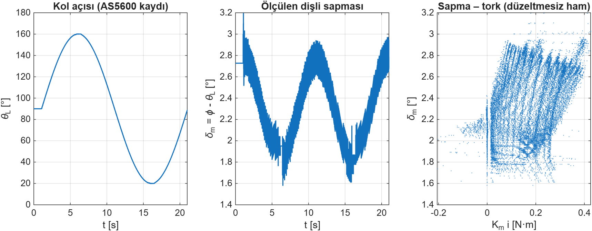
Sonuç (gerçek Ks = 10; gerçekçi düzeyde 5 koşu)
| Uydurma | İdeal | Gerçekçi, ortalama ± std |
|---|---|---|
| Bütün pencereler, cs'li | 0,00% | −0,79 ± 0,17% |
| Bütün pencereler, cs'siz | 0,00% | −0,91 ± 0,27% |
| Yalnız yukarı / yalnız aşağı | 0,00 / 0,00% | −1,21 / +0,73% |
| (yukarı + aşağı)/2 | 0,00% | −0,24 ± 0,18% |
| (yukarı + aşağı)/2, önceki kestirimlerle | +0,02% | −0,22 ± 0,18% |
- Karar: yukarı ve aşağı tarama ayrı uydurulup ortalanır (yöne bağlı hata zıt işaretli, birbirini götürüyor), Ks ~%0,5 içinde. Önceki adımların hataları Ks'ye yansımıyor.
- Kesişim r'yi vermiyor (1,397°, gerçek 1,500°): nicemleme aşağı yuvarlıyor, gerçekte iki sensörün sıfırı da bağımsız. r ayrı bir deneyle ölçülmeli (aşağıda, boşluk r).
- cs bu deneyden çıkmıyor (0,021–0,048 dağınık): yarı statik harekette δ̇ ≈ 0.
simulasyon/simulink/tani_Ks.m, tani_Ks_log.txt · kayıt tani_Ks_kayit.mat (depoda yok, yerel)Öngörünün temas sönümüne duyarlılığı
cs ölçülemeyince soru şu oldu: bilinmemesi ne kadar önemli? Sınır taraması (mod 1, P–PI, 3 açı × 3 başlangıç sapması; sınır = sınıf ≥ 3 ve genlik > 0,5°) yalnız cs değiştirilerek tekrarlandı. Sönüm oranı ζs = cs/(2√(KsJeş)), Jeş = 0,0018 kg·m².
| cs [N·m·s/rad] | ζs | Gerçekçi, gözlemci (30° / 60° / 90°) | İdeal (30° / 60° / 90°) |
|---|---|---|---|
| 0 | 0 | ≤0,80 / 1,05 / 1,05 | 0,80 / 1,00 / 1,00 |
| 0,01 | 0,037 | 0,90 / 1,20 / 1,20 | — |
| 0,02 (varsayılan) | 0,075 | 1,00 / 1,30 / 1,30 | 0,90 / 1,10 / 1,10 |
| 0,04 | 0,149 | 1,10 / 1,35 / 1,40 | 1,00 / 1,20 / 1,20 |
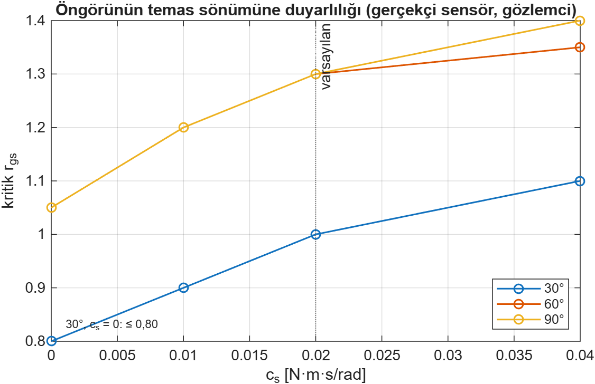
- Etki büyük: cs'nin 2 kat belirsizliği sınırı ±0,10 oynatıyor; bu, Ks'nin (%0,5) ve JM'nin (%0,5) etkisinden çok büyük.
- Fiziksel yorum: cs dişler her çarpıştığında enerji yutuyor; sönüm azaldıkça çevrim daha düşük kazançta kendini sürdürebiliyor.
- İdeal sensörde de aynı eğim var, yani etki nicemlemeden değil modelin kendisinden geliyor.
- Sonuç: cs için ayrı bir deney gerekiyor (aşağıda, vuruş testi).
simulasyon/simulink/tarama_cs.m, tarama_cs_log.txtBoşluk r
Yöntem: sıfırın iki yanına yarı statik tarama
Referansa yavaş sinüs: 0° ± 60°, 0,05 Hz. Yerçekimi torku 0°'da işaret değiştiriyor: kol θ > 0'da dişliyi + yüze, θ < 0'da − yüze yaslıyor. Ölçülen sapma δm = δ + o; o, iki sensörün bağımsız sıfırları ve nicemleme yuvarlaması. İki yüzün kümeleri arasındaki fark 2r, ve o iki kümede aynı olduğu için sadeleşiyor. Yöntemin ofsete duyarsız olduğunu göstermek için analizde AS5600 okumasına keyfi 7,3° ofset eklendi. Yüz geçişi dinamik olduğundan |θ| < 10° olan pencereler atılıyor.
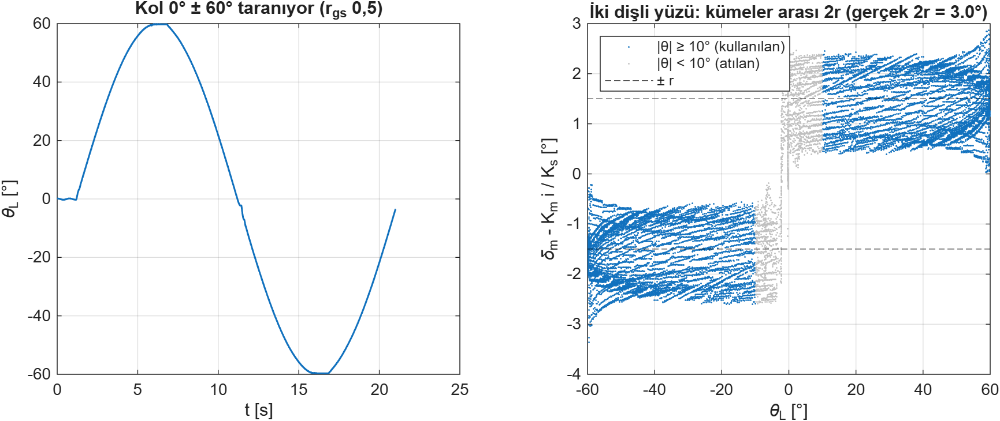
Sonuç (gerçek r = 1,500°; gerçekçi düzeyde 5 koşu)
| Uydurma | İdeal | Gerçekçi |
|---|---|---|
| A) Ks serbest, bütün pencereler | 0,00% | −0,41 ± 0,18% |
| A) (yukarı + aşağı)/2 | 0,00% | −0,05 ± 0,12% |
| B) Ks Ks deneyinden, bütün pencereler | 0,00% | −0,11 ± 0,04% |
| Ofset o (gerçek 7,3° + yuvarlama) | 7,300° | 7,208° (r'ye sızmıyor) |
simulasyon/simulink/tani_r.m, tani_r_log.txt · kayıt tani_r_kayit.mat (yerel)Temas sönümü cs: vuruş testi
Fikir: chirp'teki sorun, dinamik sapmanın motor enkoderinin bir sayımının altında kalmasıydı. Kola dışarıdan darbe verip yalnız kol açısına (AS5600, enkoderden 3 kat ince) bakılırsa sorun ortadan kalkıyor. Kol 90°'de, yerçekimi dişliyi yaslıyor. Kola 10 ms'lik tork darbesi verilip sonraki 0,6 s'lik θL kaydına sönümlü sinüs uyduruluyor: ζ = σ/√(σ² + ω²).
a) Motor kontrolcüyle tutuluyor: sağlam değil
| cs | 0 | 0,01 | 0,02 | 0,04 |
|---|---|---|---|---|
| Gözlenen ζ | 0,023 ± 0,004 | 0,037 ± 0,001 | 0,063 ± 0,002 | 0,115 ± 0,003 |
cs'ler ayrışıyor ama cs = 0'da da sönüm var (motorun mikro kayması ve kontrolcü enerji yutuyor). Eğri benzetimden kurulmak zorunda ve bilinmeyen yapışma sürtünmesine bağlı: Fs belirsizliği cs'de ≈ %25 hata.
b) Motor mili mekanik olarak kilitli: temiz
Kol dişli yayı üzerinde tek kütle; kontrolcü ve motor sürtünmesi denklemden çıkıyor: cs = 2√(KsJL)·ζ − bL.
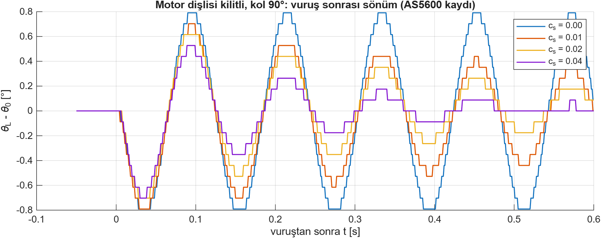
| Durum | Gerçek cs | Formülle cs |
|---|---|---|
| Taban | 0 / 0,01 / 0,02 / 0,04 | 0,0000 / 0,0100 / 0,0195 / 0,0403 |
| Fs 0,04 / 0,09 | 0,02 | 0,0204 / 0,0200 |
| rgs 0,6 | 0,02 | 0,0196 |
| Darbe −0,21 / −0,63 N·m | 0,02 | 0,0207 / 0,0199 |
| JL ×1,05 (formülde nominal) | 0,02 | 0,0198 |
- Hata her durumda ≤ 0,0007 (~%3,5); kritik rgs'ye etkisi ~0,004, tarama adımının çok altında.
- Karar: cs motor dişlisi kilitlenip kola hafif vurularak ölçülür. Darbe genliği önemli değil, yeter ki dişli temastan ayrılmasın (θL tepeden tepeye ≲ 25 AS5600 sayımı).
- Ayrılamayan terim: deney cs + bL'yi birlikte ölçüyor. Kol yatağında Coulomb sürtünmesi varsa zarf üstel değil doğrusal azalır; kayıtta zarfın biçimine bakılacak (benzetimde sınanmadı).
simulasyon/simulink/tani_cs.m, tani_cs_log.txt · model değişikliği blok_yuk.m, blok_tesis.m, sim_param.m (p.d0) · kayıtlar tani_cs_kayit.mat, tani_cs_kilit_kayit.mat (yerel)mgℓ ve AS5600 sıfırı
Yeni benzetim yok; Ks (90° ± 70°) ve r (0° ± 60°) kayıtları yeniden kullanıldı. Kol denklemi τg = JLθ̈ + bLθ̇ + mgℓ·sinθ. AS5600'ün sıfırı bilinmediği için θ = θm − θ0, ve mgℓ·sin(θm − θ0) = a·sinθm + b·cosθm doğrusal: mgℓ = √(a² + b²), θ0 = atan2(−b, a).
| Kayıt | mgℓ hatası: JL ihmal / JL ile | θ0 hatası: JL ihmal / JL ile |
|---|---|---|
| 90° ± 70°, ideal | 0,00 / 0,00% | −0,099 / 0,000° |
| 90° ± 70°, gerçekçi (5 koşu) | +0,01 / +0,01 ± 0,01% | −0,132 / −0,043 ± 0,007° |
| 0° ± 60°, ideal | −0,17 / 0,00% | −0,027 / 0,000° |
| 0° ± 60°, gerçekçi (5 koşu) | −0,12 / +0,06 ± 0,03% | −0,044 / −0,046 ± 0,004° |
- JL terimi küçük ama sistematik (sinüs taramada θ̈ sinθ/cosθ ile örtüşüyor); geometriden alınıp çıkarılıyor. JL %5 yanlış olsa bile etkisi ≤ %0,01.
- Kalan −0,045° AS5600'ün yarım sayımı; kontrolcü de aynı sensörü okuduğu için zararsız.
- Karar: mgℓ ve AS5600 sıfırı D3 kaydından, %0,1 / 0,05° içinde. Ayrı kalibrasyon gerekmiyor.
simulasyon/simulink/tani_mgl.m, tani_mgl_log.txtÖngörünün doğrulanması
Asıl soru: tanılanan değerlerle kurulan ikiz, gerçek tesisin salınım sınırını öngörüyor mu? Tanılanan takım her adımın gerçekçi koşu ortalaması (JM −0,21%, bM +1,35%, Fc 0,0396, Ks −0,24%, cs 0,0195, r −0,11%, mgℓ +0,01%); JL ve bL geometriden. Sensör, kontrolcü ve gözlemci üç takımda aynı.
| Takım | Kritik rgs (30° / 60° / 90°) | 90°, rgs 1,45 | 90°, rgs 1,60 |
|---|---|---|---|
| Gerçek tesis | 1,00 / 1,30 / 1,30 | 1,25°, 8,12 Hz | 1,77°, 8,19 Hz |
| Tanılanan, Fs ölçülmüş | 0,95 / 1,30 / 1,30 | 1,50°, 8,15 Hz | 1,78°, 8,16 Hz |
| Tanılanan, Fs = Fc (bilinmeden) | 0,95 / 1,25 / 1,25 | sönüyor | 1,79°, 8,20 Hz |
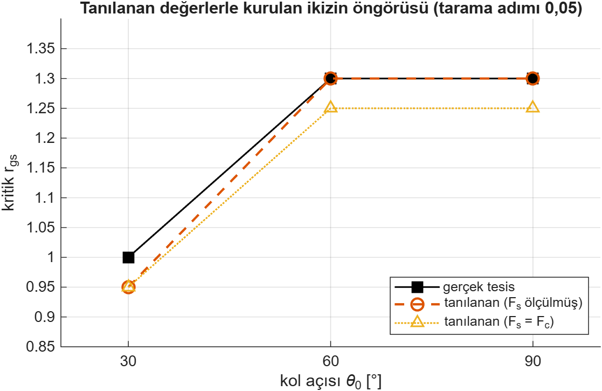
- Sınır en çok bir tarama adımı (0,05) içinde; sınırın iyice üstünde (1,60) genlik %1, frekans %0,5 içinde.
- Sınıra yakın (1,45) genlik %20 farklı; bu bölge başlangıç koşuluna duyarlı. Sınır yakınında tek koşu güvenilir bir ölçüt değil, deneyde her nokta üç başlangıç sapmasıyla.
- Ölçülmeyen Fs öngörüyü 60–90°'de 0,05 aşağı çekiyor; kalan en büyük belirsizlik buydu ve ölçmesi kolay (aşağıda, Fs).
simulasyon/simulink/tani_dogrula.m, tani_dogrula_log.txtYapışma sürtünmesi Fs
Kol sökülü, açık çevrim, torka çok yavaş sinüs (0,1 N·m, 0,02 Hz; sıfır geçişinde ~0,013 N·m/s rampa); her yarım periyotta bir kopma. Kopma anı: aynı yönde, aralarında ≤ 50 ms olan iki enkoder sayımının ilki. Fs = o andan önceki 20 ms'nin Km·i ortalaması. (Modeldeki Stribeck tanh ile yumuşatılmış ve kopmadan önce yavaş sürünmeye izin veriyor, bu yüzden tek sayım yetmiyor.)
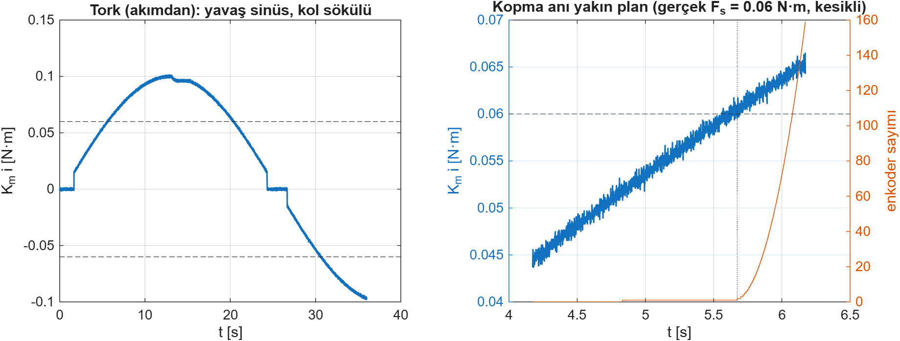
| Gerçek Fs | Düzey | Kestirim hatası (her iki yön) |
|---|---|---|
| 0,06 | İdeal akım | +0,70 ± 0,02% |
| 0,06 | Gerçekçi (4 koşu, 8 kopma) | +0,71 ± 0,21% |
| 0,09 | Gerçekçi (2 koşu, 4 kopma) | −0,80 ± 0,30% |
Karar: Fs, D1'in düzeneğinde ~36 s'lik ek kayıtla, %1 içinde. Öngörü doğrulamasındaki "Fs ölçülmüş" satırı böylece geçerli öngörü oluyor.
simulasyon/simulink/tani_Fs.m, tani_Fs_log.txt · kayıt tani_Fs_kayit.mat (yerel)Kol eylemsizliği JL
Yeni benzetim yok. Kilitli motorda kol dişli yayı üzerinde tek kütle: ωn² = Ks/JL, ωn vuruş testinin sönümlü sinüs uydurmasından. 23 koşudan JL hatası −0,25 … +0,13%. Ks'nin hatası JL'ye birebir geçer. Donanımda ölçülen sertlik kilit pimi ve milin esnekliğini de içerir; bu yüzden JL tartı + CAD tahminiyle karşılaştırılacak, fark %5'i aşarsa geometriden alınacak.
simulasyon/simulink/tani_cs_log.txt ("kilit" bloğu)Gerilim modunda tekrar: akım döngüsü gerekmiyor
Benzetimdeki deneylerin bir kısmı 10 kHz'lik akım döngüsüyle (mod 3) yapılmıştı. Donanımda akım I²C'den (INA228) okunacağı için bunun karşılığı yok. D2–D5 gerilim modunda (mod 1) yeniden koşuldu. Denklemler ölçülen akımı kullandığından sürücünün nasıl çalıştığı kestirime girmiyor.
| Parametre (gerçekçi) | Mod 3 | Mod 1 |
|---|---|---|
| Ks, (yukarı + aşağı)/2 | −0,24 ± 0,18% | −0,28 ± 0,39% |
| r | −0,11 ± 0,04% | −0,15 ± 0,03% |
| cs, motor kilitli | −0,0005 | −0,0005 |
| Fs = 0,06 | +0,71 ± 0,21% | −1,04 ± 0,68% |
| Fs = 0,09 | −0,80 ± 0,30% | −2,40 ± 1,32% |
Karar: bütün tanılama deneyleri gerilim modunda yapılabilir; firmware'e hızlı akım döngüsü gerekmiyor. Akım yalnız kayıt için ölçülüyor (1 kHz'te INA228 yeterli). Fs'nin %2–3'lük hatasının kritik rgs'ye etkisi ~0,002.
tani_*.m betikleri mod argümanıyla; sonuçlar aynı log dosyalarında "mod 1" başlığıyla · kayıtlar *_mod1_kayit.mat (yerel)Donanım deney protokolü D0–D6
Dijital ikizde sınanan yöntemler donanımda uygulanacak sıralı bir listeye çevrildi. Her deney öncekilerin sonucunu kullanıyor. Ortak ayarlar: 1 kHz seyreltmesiz kayıt, gözlemci hız kestirimi, gerilim modu, meta veri (firmware sürümü, kazançlar, sıcaklıklar, uç kütlesi). Analiz betikleri benzetimdekilerle aynı; yalnız girdi firmware kaydı olacak.
| # | Düzenek | Ne yapılır | Süre × tekrar | Çıkan | Benzetimde doğruluk |
|---|---|---|---|---|---|
| D0 | Kalibrasyon | Enkoder yönü, AS5600 ayarı, akım ölçümü, döngü zamanlaması, akım sınırı | — | Ölçekler, tork sınırı | — |
| D1 | Kol sökülü | Gerilim sinüsü 0,25 Hz | 9 s × 3 | Km, Ra, JM, bM, Fc | %0,05–1,4 |
| D2 | Kol sökülü | Tork sinüsü 0,1 N·m, 0,02 Hz | 36 s × 3 | Fs | %1–2,5 |
| D3 | Kol takılı | 90° ± 70°, rgs 0,8 | 21 s × 5 | Ks, mgℓ, AS5600 sıfırı | %0,5–1 / %0,1 / 0,05° |
| D4 | Kol takılı | 0° ± 60°, rgs 0,5 | 21 s × 5 | r | %0,2 |
| D5 | Motor dişlisi kilitli | Kol 90°'de, hafif vuruş | 10 vuruş | cs, JL | %3,5 / %0,5 |
| D6 | Asıl deney | Açı × rgs, öngörülen sınırın ±0,15 çevresinde 0,05 adımla, her noktada 3 başlangıç sapması | — | Ölçülen sınır | Öngörü ±0,05 |
Tanılama toplamı (D1–D5) kurulum hariç ≈ 30 dakika kayıt.
Kaydın geçerlilik ölçütleri (sağlanmazsa kayıt atılır)
- D1: |φ̇| > 2 rad/s olan en az 50 pencere; tekrarlar arası JM farkı ≤ %2.
- D2: her yönde en az bir kopma; tekrarlar arası Fs farkı ≤ %3.
- D3: dişli tarama boyunca tek yüzde: δm–τg tek bir düz çizgi.
- D4: |θ| > 10° iken iki ayrı yatay küme; arada örnek varsa dişli takırdıyor, rgs düşürülür.
- D5: θL tepeden tepeye ≤ 25 AS5600 sayımı; zarf üstel olmalı; JL geometriyle %5 içinde (kilit rijit mi?).
- D6: sınır tanımı benzetimle aynı (sınıf ≥ 3 ve genlik > 0,5°, herhangi bir başlangıç sapmasında).
Karşılaştırma
D1–D5 sonuçlarıyla ikiz kurulur, D6'nın her açısında kritik rgs'yi öngörür. Ölçüt: öngörülen − ölçülen sınır farkı. Aynı veri üzerinde yerçekimsiz Ghaffari öngörüsü ve önerilen yerçekimli DF öngörüsü de karşılaştırılır.
calisma_notu/deney_protokolu.md. Protokol 5. adımda (donanım hazırlığı) uygulanacak.Eksik kalanlar
Açı yönündeki sınır hatası 15° (hedef 5°)
Ayrı bir hata değil. Kritik kazanç eğrisi açıya göre çok yatık (30–55° arasında 1° başına 0,004–0,006 rgs); kazançtaki %15–20'lik fark açıda 20–50° kaymaya dönüşüyor. DF tek bir sabitle (1,22) ölçeklenince açı hatası medyan 5°'ye iniyor: DF sınırın biçimini doğru veriyor. Sabit aynı veriden uyduruldu, öngörü değil; yalnız hatanın kaynağını gösteriyor. Bu eğimde 5° hedefi kazançta %3–5 doğruluk demek.
Dişli sertliği Ks, temas sönümü cs ve rotor eylemsizliği tahmin
Ks ve cs, DF'nin en duyarlı olduğu iki parametre; kaynakların hiçbiri cs'yi raporlamıyor. Düzenek gelince sistem tanılamada ölçülecek.
Düşük kazançlı çarpma rejimi
γsınır ≈ 3ρ³ ilişkisinde DF üs yasasının biçimini veriyor (DF ≈ 5,5ρ2,5, benzetim ≈ 3,3ρ3,0) ama sınırı 2,6–7,7 kat yüksek öngörüyor; deney hedef bölgesinde (ρ ≈ 0,3) 2,6 kat. Bu bölge için çarpmalı model gerekiyor.
A düzeneğinde kritik kazanç hatası %27
Olası neden kısmi temastaki sönüm; A için kök neden sınaması yapılmadı.
Olmayanlar ve kök neden sınaması
Sun 2023 sayısal olarak yeniden üretilemedi
Makale hız döngüsünün PI katsayılarını ve temas sönümünü vermiyor. Oranlar gözlenen salınım frekansından tahminle eşlendi (Bölüm 6). Seçenek: yazarlardan katsayıları istemek ya da düzenekte Kp = 20 / 50 eşdeğeri bir sınama.
Ghaffari'nin sürtünmeli deney uyumu yalnız ayarlanmış bir tork sınırıyla
Makalede verilmeyen ≈ 360 N·m'lik bir tork sınırıyla yakalandı (%3,9; makalede %2,4 / %3,3). Değer aynı veriye ayarlandı, öngörü değil.
Kalan %19'luk kazanç hatası: kök neden parça parça sınandı
| Kaynak | Katkı | Nasıl sınandı |
|---|---|---|
| Dişlinin etkin sertliği (DF'nin özü) | yok | Benzetimde ölçülen etkin sertlik her genlikte DF ile aynı (0,433 / 0,428; 0,623 / 0,624) |
| Doğrusal kısım, yerçekiminin doğrusallaştırılması | %1–4 | Dişli yerine DF'nin eşdeğer yayı konunca frekans %0,5 içinde |
| Kısmi temasta etkin sönüm | ≈ %4–8 | Sapma sinüs olmadığı için etkin sönüm benzetimde 1,2–2 kat; DF'de sönüm 2 katına çıkınca hata %19 → %11 |
| Tork sınırı ve anti-windup | uyuşmayan hücrelerin yarısı | Tork sınırı kaldırılınca bu hücreler salınıyor; DF anti-windup'ı içermiyor |
Paylar toplanabilir değil (aynı hücrelerde üst üste biniyor). Ayrıca sınandı ve elendi: fark iki tarafın "çevrim var" tanımından gelmiyor (büyük sarsıntıda, her hücrenin kendi frekansında da çevrim başlamadı).
kok_neden_1.m … kok_neden_3f.m, aci_hatasi.py, yasa_df.m · kayıt: kok_neden_log.txt, aci_hatasi_log.txt, yasa_df_log.txtDeğerlendirme ve sonraki adımlar
İlerleyiş doğru mu? Evet. Sıra "önce benzetimle yöntemi kur ve doğrula, sonra deney" idi; benzetim aşaması amacına ulaştı: literatür sonucu yeniden üretildi, yöntem 4 kat daha doğru, hatanın kaynağı ayrıldı. Asıl doğrulama deney olduğu için işler deneye göre sıralandı.
| İş | Ne zaman | Neden bu sırada |
|---|---|---|
| Sistem tanılama yöntemlerinin benzetimde sınanması | Yapıldı (Bölüm 10) | Bütün parametreler %0,1–3,5 içinde; deney ilk seferde doğru kurulabilir. |
| Sistem tanılama (ölçüm), protokol D0–D5 | Malzeme gelince (5. adım) | DF'nin en duyarlı olduğu iki parametre; tahmin değerlerle yapılan her iyileştirme ölçümle değişebilir. |
| Açı × kazanç deneyleri (D ve A uçları, iki boşluk ayarı, küçük ve büyük sarsıntı) | Tanılamadan sonra (6. adım, D6) | Önerilen yöntemin asıl doğrulaması. |
| Çok harmonikli denge ve anti-windup'lı doyum modeli | Deney verisinden sonra, gerekirse | Şimdi yapılırsa yöntem tahmini cs'li benzetime uydurulmuş olur. |
| Düşük kazançlı çarpma rejimi için çarpmalı model | Ana çalışmadan sonra | Hata en çok deney hedef bölgesinin altında; ayrı, araştırma düzeyinde bir yöntem. |
| Sun 2023'ün nicel yeniden üretimi | Katsayılar elde edilirse | Hız döngüsü katsayıları ve temas sönümü makalede yok. |
Görüşülecek: başarı ölçütleri (özellikle açı hedefi), düzenek seçimi (önerilen D; kabul edilirse malzeme listesine 150 g'a kadar uç kütlesi eklenecek), siparişin EKOM üzerinden verilmesi.
Gelebilecek sorular
Neden tanımlama fonksiyonu? Daha kesin bir yöntem yok mu?
Ghaffari çerçevesi DF ile kurulmuş ve deneyle doğrulanmış; katkıyı aynı çerçevenin genişletmesi olarak koymak karşılaştırmayı adil kılıyor. DF kapalı biçim sezgi veriyor (γ, n1,min). Kesinlik için benzetim haritası her adımda referans olarak kullanıldı.
Yerçekimli iki girişli DF literatürde yok mu?
Kaymalı (iki girişli) DF aracı yeni değil (Gelb–Vander Velde). Yeni olan, Ghaffari'nin kazanca bağlı salınım çerçevesine yerçekimi ön yükünü eklemek ve açı × kazanç düzleminde doğrulamak.
%19 hata kabul edilebilir mi?
Hedef ≤ %20 ve Ghaffari'den ≥ 2 kat iyi idi; ikisi de tutuyor (4 kat). Hata sistematik ve temkinli yönde: DF çevrimi biraz erken (düşük kazançta) öngörüyor.
Açı hedefi neden tutmuyor, ölçütü mü değiştiriyorsun?
Ölçüt değişmiyor; eğri yatık olduğu için açıdaki hata kazanç hatasının büyütülmüş hâli. Tek sabitle ölçeklenince 5°'ye iniyor. Deneyde tanılanmış Ks ve cs'yle yeniden değerlendirilecek.
Neden hem betik hem Simulink/Simscape?
Taramalar binlerce koşu gerektirdiği için vektörize betikte. Simulink betikle bit düzeyinde aynı sonucu, Simscape farklı bir modelleme yoluyla aynı rejimleri veriyor: sonuçların kodlama hatasından gelmediğinin bağımsız sağlaması. Firmware'e yakın ayrıntılar (sensör, sürücü, deney kaynağı, kayıt) ve sistem tanılama Simulink/Simscape ikizinde.
Neden D düzeneği, A neden yetmiyor?
A'da kolun eylemsizliği motorunkinin yalnız 0,17'si; dişli çoğu zaman temas etmiyor, DF zorlanıyor. D'de R ≈ 1, DF geçerli ve yerçekimi torku büyük (90°'de motor torkunun yarısı). Uç kütlesi değiştirilebilir olunca A ve D aynı düzenekte iki uç olur.
Ks ve cs tahminse sonuçlara ne kadar güvenilir?
Karşılaştırma (Ghaffari'ye göre iyileşme, açı örüntüsü) bu değerlerden bağımsız olarak tutuyor. Mutlak sınır ve frekans bu değerlere bağlı; en duyarlı olan cs. İkisi de sistem tanılamada ölçülecek.
Kaynaklar ve dosya dizini
Kaynaklar
- Ghaffari, Mohammadiasl 2013, IEEE/ASME Transactions on Mechatronics. doi:10.1109/TMECH.2012.2195670
- Wang ve ark. 2017, IEEE Transactions on Industrial Electronics. doi:10.1109/TIE.2017.2711564
- Sun ve ark. 2023, IEEE Transactions on Industrial Electronics. doi:10.1109/TIE.2022.3156154
- Esbrook, Tan, Khalil 2014, IEEE Transactions on Automatic Control. doi:10.1109/TAC.2013.2281859
"Makaleden" etiketli şekiller Ghaffari 2013'ten kırpılmıştır, telif hakkı yayıncıya (IEEE) aittir; yalnız karşılaştırma amacıyla gösterilmiştir.
Dosya dizini (depo içinde)
| Bölüm | Kod | Sonuç / kayıt |
|---|---|---|
| 3, ilk benzetimler | kol_benzetim.m, harita.m, duyarlilik.m, boyutsuz_harita.m, boyutsuz_sinir.m, motor_*.m | sonuclar_2026-10-18.md, *_log.txt, *.png |
| 4, yeniden üretim | 4a_ghaffari/ghaffari2013.m, ghaffari_param.m, ghaffari_df.m, ghaffari_tabla.m, ghaffari_sekil78.m, tork_siniri.m | sekil78_sonuclar.md, tabla_sonuclar.md, sekil78_kalibre.png, tabla_karsilastirma.png |
| 4, köprü | kopru_7a.m, kopru_7b.m, kopru_7b_R.m | kopru_7a_log.txt, kopru_7b_sonuclar.md |
| 5, yerçekimli DF | yercekimli_df.m, yercekimli_df_testleri.m, yercekimli_karsilastirma.m | yercekimli_sonuclar.md, yercekimli_log.txt, yercekimli_kritik_D.csv, _A.csv |
| 6, eşleme | — | esleme_tablosu.md, parametreler.md |
| 7, rejim | rejim_sinifla.m, rejim_testleri.m, zorlanmis_cevap.m | rejim_siniflandirma.md, rejim_testleri_log.txt, zorlanmis_cevap_log.txt |
| 8, düzenek seçenekleri | 4a_ghaffari/secenekler.m, sensor_7c.m, harita_html.py | secenekler_sonuclar.md, sensor_7c_sonuclar.md |
| 9, dijital ikiz | simulink/kol_model_kur.m, sm_model_kur.m, blok_*.m, dogrula_2.m, dogrula_5a.m, tarama_5b.m | dogrula_2_log.txt, dogrula_3_log.txt, dogrula_5a_log.txt, tarama_5b_log.txt, README.md |
| Ek B, Multibody 3B | simulink/mb_model_kur.m, mb_param.m, dogrula_mb.m, mb_animasyon.m, mb_kareler.m | dogrula_mb_log.txt, dogrula_mb_izler.mat, rapor/img/mb_animasyon.mp4, rapor/img/mb_*.png |
| 10, tanılama | simulink/tani_*.m, km_kestir.m, tarama_cs.m, tani_dogrula.m | tani_*_log.txt, tarama_cs_log.txt, tani_dogrula_log.txt, README.md (4.3) |
| 11, protokol | — | calisma_notu/deney_protokolu.md |
| 13, kök neden | kok_neden_*.m, aci_hatasi.py, yasa_df.m | kok_neden_log.txt, aci_hatasi_log.txt, yasa_df_log.txt |
Yollar simulasyon/ klasörüne göre. Bölüm 5 ve 7'deki iki grafik bu rapor için çizildi; veriler depodaki CSV'lerden ve modellerin yeniden koşusundan.
Simulink tasarım ayrıntıları
Bu ek, Bölüm 9'daki üç modelin içini gösteriyor: hangi bloklardan oluştukları, blok parametreleri, çözücü ayarları ve MATLAB Function bloklarının kodu. Model dosyalarının kendisi (.slx) ve onları kuran betikler bu PDF'e ek dosya olarak gömülü (Ek A.6).
A.1 Ortak tasarım kararları
- Modeller elle çizilmedi, betikle kuruluyor:
kol_model_kur.mvesm_model_kur.mblokları yerleştirip bağlıyor, MATLAB Function bloklarının kodunublok_*.mdosyalarından okuyup bloğa yazıyor..slxikili bir dosya; kaynak betik. Bu yüzden modeldeki kod ile betiklerdeki kod tek bir kaynaktan geliyor. - Parametreler tek bir yapıda:
sim_param.m,kol_benzetim.m'nin parametre yapısını sayısal birSyapısına çeviriyor. Bloklar parametreyiS.Ks,S.JMgibi okuyor; koşuSimulink.SimulationInputileS,Ts,dt,T,decdeğişkenleri verilerek başlatılıyor. Aynı modelle bir açı × kazanç taraması yalnızSdeğiştirilerek yapılıyor. - Kontrolcü ayrık, tesis sürekli: kontrolcü ve sensör
Tsörneklemeli (sıfırıncı derece tutucu), tesis sürekli zamanda. Bu, ESP32 firmware'inin göreceği yapıyla aynı.
| Ayar | Değer | Not |
|---|---|---|
| Çözücü | ode4 (sabit adımlı Runge–Kutta 4) | Betikle aynı yöntem; sonuçlar bu yüzden bit düzeyinde örtüşüyor |
| Adım | dt = 1e-4 s | Betikle aynı |
| Bitiş | T (referans hücrelerde 8 s) | |
| Kayıt seyreltme | dec | Ölçüm/tanılama koşularında 1 (bkz. README 4.2 düzeltmesi) |
| Kontrolcü örneklemesi | Ts (ideal: = dt; gerçekçi: 1 ms) | |
| Simscape Solver Configuration | Yerel çözücü kapalı, DerivativeReplacement, kalan toleransı 1e-9 | Simscape ağı da genel ode4 adımıyla çözülüyor |
| Hard Stop geçiş bölgesi | gecis = 1e-6 rad | 1e-8 ile aynı sonuç (Bölüm 9) |
A.2 Parametre değerleri (D düzeneği, kol tarafına indirgenmiş)
| Büyüklük | Değer | Not |
|---|---|---|
| JM, JL | 0,0036 kg·m² (ikisi de) | JM rotor eylemsizliği tahminden |
| Ks | 10 N·m/rad | tahmin |
| cs | 0,02 N·m·s/rad | tahmin |
| 2r | 3° | |
| mgℓ | 0,24 N·m | |
| Tmax | 0,49 N·m (ideal tork kaynağında) | JGB37-520 durma torku |
| Elektrik modeli: Vs | 12 V | |
| Km = Vs/ω0 | 0,344 V·s/rad | ω0 = 333 rpm (çıkışta boşta hız) |
| Ra = KmVs/Tdurma | 8,43 Ω | eşdeğer; durma torku, boşta hız ve zıt EMK sönümü veri sayfasıyla aynı |
| La | 2,5 mH | tahmin (elektrik zaman sabiti ≈ 0,3 ms) |
| Ilim | 1,24 A (eşdeğer) | DRV8874'ün 2 A sınırı → tork sınırı 0,43 N·m |
| Akım PI | Kpi = Laωi, Kii = Raωi, ωi = 2π·500 | kutup-sıfır sadeleştirme, örnekleme 10 kHz |
simulasyon/simulink/sim_param.m, simulasyon/kol_benzetim.m (D düzeneği ayarı)A.3 kol_model.slx (Simulink)
Diyagram Bölüm 9'da. Tesisin MATLAB Function olarak yazılmasının nedeni: Simulink'in hazır Backlash bloğu sertliği olmayan kinematik bir boşluk; dişli teması (ölü bölge + yay + sönüm, yalnız itme) onunla kurulamıyor.
| Blok | Tip | Görevi |
|---|---|---|
| saat | Clock | Zaman (bozucunun kesilmesi için) |
| tesis | MATLAB Function | ẋ = f(x, u, t): iki kütle + dişli teması + Stribeck + yerçekimi + bozucu; ayrıca dişli torku τs |
| x | Integrator (başlangıç S.x0) | Durum x = [φ, φ̇, θ, θ̇] |
| sensor | MATLAB Function (ayrık, Ts) | AS5600 nicemleme + gecikme tamponu, hız kestirimi |
| kontrolcu | MATLAB Function (ayrık, Ts) | P–PI ya da PID, tork sınırı, anti-windup, sürücü ölü bandı |
| x_out, tau_s, u_out | Outport 1–3 | Durum, dişli torku, tork komutu |
function [dx, ts] = tesis(x, u, t, S)
% İki kütle + dişli teması (kol tarafına indirgenmiş). kol_benzetim.m / f(x) ile aynı.
phi = x(1); dphi = x(2); th = x(3); dth = x(4);
d = phi - th; dd = dphi - dth;
ts = 0;
if d > S.r
ts = max(S.Ks*(d - S.r) + S.cs*dd, 0); % temas yalnız iter, çekmez
elseif d < -S.r
ts = min(S.Ks*(d + S.r) + S.cs*dd, 0);
end
tf = 0;
if S.Fc > 0 % yumuşatılmış Stribeck sürtünmesi
tf = (S.Fc + (S.Fs - S.Fc)*exp(-(dphi/S.vs)^2)) * tanh(dphi/S.veps);
end
bz = 0;
if t < S.dT
bz = S.dA*sin(2*pi*S.df*t); % yük bozucusu
end
dx = [dphi;
(u - S.bM*dphi - tf - ts)/S.JM;
dth;
(ts - S.bL*dth - S.mgl*sin(th) + bz)/S.JL];
endfunction [thm, v] = sensor(x, S)
% Kol açısı ölçümü (nicemleme + gL örnek gecikme) ve hız (gerçek ya da kestirilmiş).
% kol_benzetim.m'deki kontrolcü örneğinin ölçüm kısmı ile aynı sıra.
persistent buf vhat yprev
vi = 3; qv = S.qL;
if S.motorD > 0, vi = 1; qv = S.qM; end
if isempty(buf)
buf = olc(x(3), S.qL)*ones(21,1);
yprev = olc(x(vi), qv);
vhat = 0;
end
thm = olc(x(3), S.qL);
if S.gL > 0
buf = [buf(2:end); thm];
thm = buf(21 - S.gL);
end
if S.fv_inf > 0
v = x(vi + 1);
else
yv = olc(x(vi), qv);
vhat = vhat + S.aV*((yv - yprev)/S.Ts - vhat);
yprev = yv;
v = vhat;
end
end
function y = olc(x, q)
y = x;
if q > 0, y = q*floor(x/q); end
endfunction u = kontrolcu(thm, v, S)
% PID ya da P-PI kaskat + tork sınırı + basit anti-windup + sürücü ölü bandı.
persistent z
if isempty(z), z = S.z0; end
e = S.ref - thm;
if S.ppi > 0
ev = S.kp*e - v; % hız hatası (kol tarafı)
u0 = S.KV*ev + S.KI*z;
iz = ev;
else
u0 = S.Kp*e + S.Ki*z - S.Kd*v;
iz = e;
end
u = min(max(u0, -S.Tmax), S.Tmax);
doy = (u0 > S.Tmax && iz > 0) || (u0 < -S.Tmax && iz < 0);
if ~doy, z = z + iz*S.Ts; end
if abs(u) < S.olu, u = 0; end
endA.4 sm_kol_model.slx (Simscape mekanik)
Mekanik kısım Simscape fiziksel bloklarıyla, yani denklem yazılmadan kuruldu. Yerçekimi, bozucu ve Stribeck sürtünmesi Simulink'te hesaplanıp ağa tork olarak veriliyor.
| Blok | Simscape/Simulink bloğu | Parametreler / görevi |
|---|---|---|
| JM, JL | Inertia | inertia = S.JM / S.JL; başlangıç hızı S.x0(2) / S.x0(4) |
| bM, bL | Rotational Damper | D = S.bM / S.bL |
| dis (dişli) | Rotational Hard Stop | model = smooth; üst/alt sınır = ±S.r − (S.x0(1) − S.x0(3)); sertlik = S.Ks; sönüm = S.cs; geçiş = gecis |
| tork_m, tork_L | Ideal Torque Source | Simulink'ten gelen motor torku ve kola etkiyen dış tork |
| olc_m, olc_L | Ideal Rotational Motion Sensor | açı + hız; ofset S.x0(1) / S.x0(3) |
| zemin | Mechanical Rotational Reference | |
| cozucu | Solver Configuration | A.1 |
| sps_m, sps_L / ps_* | Simulink-PS / PS-Simulink Converter | birim dönüşümü (N·m, rad, rad/s) |
| yuk | MATLAB Function | tm = u − Stribeck; ta = −mgℓ sin θ + bozucu |
| kontrolcu (ayrik) | MATLAB Function (ayrık, Ts) | sensör + kontrolcü + hız kestirici + deney kaynağı, durumsuz yazım |
| durum | Unit Delay (başlangıç S.st0, Ts) | kontrolcünün 28 elemanlı durumu: gecikme tamponu, hız kestirimi, integral, kestirici durumları |
| mux, x_out, u_out, olc_out | Mux, Outport | durum, tork komutu, firmware kaydı |
Cebirsel döngü: Hard Stop ağda cebirsel denklem bıraktığı için Simulink geri besleme döngüsünü cebirsel döngü sayıyor ve durum tutan (persistent) MATLAB Function blokları böyle bir döngüde çalışamıyor. Çözüm: sensör ve kontrolcü tek bir durumsuz blokta (
ayrik), durumlar dışarıdaki Unit Delay'de.function [tm, ta] = yuk(x, u, t, S)
% Simscape modelinde fiziksel ağa verilen torklar (Simulink tarafında hesaplanır):
% tm: motor eylemsizliğine etkiyen net tork = kontrolcü torku - Stribeck sürtünmesi
% ta: kola etkiyen dış tork = yerçekimi + yük bozucusu
% Viskoz sürtünmeler (bM, bL) ve dişli teması Simscape bloklarındadır.
dphi = x(2); th = x(3);
tf = 0;
if S.Fc > 0
tf = (S.Fc + (S.Fs - S.Fc)*exp(-(dphi/S.vs)^2)) * tanh(dphi/S.veps);
end
tm = u - tf;
bz = 0;
if t >= S.d0 && t < S.dT
bz = S.dA*sin(2*pi*S.df*(t - S.d0));
end
ta = -S.mgl*sin(th) + bz;
endfunction [u, st1, v, m] = ayrik(x, st, t, S)
% m: firmware'in Ts'de kaydedeceği ölçümler [th_L (AS5600, gecikmeli); phi (enkoder); v (kestirim); u]
% v: kontrolcünün kullandığı hız (sürücünün zıt EMK kompanzasyonu için dışarı verilir)
% Sensör + kontrolcü, durumsuz yazım (Simscape modeli için). blok_sensor + blok_kontrolcu ile aynı hesap;
% durumlar persistent yerine dışarıdaki Unit Delay'de tutulur: st = [tampon(21); vhat; yprev; z].
% Böylece Simscape ağının (Hard Stop yüzünden) yapısal cebirsel döngüsünü Simulink çözebilir.
%
% Deney kaynağı (firmware'in üreteceği sinyal, Ts örneklemeli; sim_param'daki S.dny_*):
% S.dny_yer = 0 yok (kontrolcü olduğu gibi)
% 1 referansa eklenir: e = ref + d - thm (kapalı çevrim konum uyarımı)
% 2 tork komutuna eklenir: u0 = kontrolcü + d (kapalı çevrim tork enjeksiyonu)
% 3 açık çevrim: u0 = dny_u0 + d, kontrolcü kapalı, integral donuk
% d = dny_A * şekil(t - dny_t0), yalnız dny_t0 <= t < dny_t0 + dny_Td:
% S.dny_sek = 1 dikdörtgen (basamak; kısa Td ile darbe), 2 doğrusal chirp f0 -> f1,
% 3 logaritmik chirp f0 -> f1, 4 sinüs (sabit f0)
% Serbest salınım: dny_yer = 3, dny_A = 0, dny_u0 = 0 ve başlangıç sapması (p.adim / p.x0).
%
% Hız kestirimi (S.hiz; fv = Inf ise hepsi yerine gerçek hız):
% 0 fark (y_k - y_{k-1})/Ts + birinci dereceden alçak geçiren (kesim fv) [varsayılan]
% 1 periyot son iki enkoder kenarı arasındaki süre: v = n q / (t_kenar - t_önceki_kenar).
% Kenar zamanı donanımda GPIO kesmesi + µs sayaçla damgalanır; burada iki örnek arasında
% gerçek açının doğrusal aradeğerlemesiyle bulunur. Yön değişince v = 0. Kenar gelmezse
% |v| <= q / (t - t_son_kenar) (yavaşlayınca sıfıra iner). Filtre yok.
% 2 gozlemci ikinci dereceden izleme gözlemcisi (Euler, Ts): e = y - th_hat,
% th_hat += Ts (w_hat + 2 wo e), w_hat += Ts wo^2 e, wo = 2 pi fv (kritik sönümlü)
% Ek durumlar st(25:28): periyot [phi_önceki (gerçek), t_son_kenar, yön, v]; gozlemci [th_hat, w_hat, 0, 0].
buf = st(1:21); vhat = st(22); yprev = st(23); z = st(24); ek = st(25:28);
vi = 3; qv = S.qL;
if S.motorD > 0, vi = 1; qv = S.qM; end
% --- sensör ---
thm = olc(x(3), S.qL);
if S.gL > 0
buf = [buf(2:end); thm];
thm = buf(21 - S.gL);
end
if S.fv_inf > 0
v = x(vi + 1);
elseif S.hiz == 1
[v, ek] = periyot(x(vi), t, ek, qv, S.Ts);
yprev = olc(x(vi), qv);
elseif S.hiz == 2
yv = olc(x(vi), qv);
wo = 2*pi*S.fv;
e_o = yv - ek(1);
ek(1) = ek(1) + S.Ts*(ek(2) + 2*wo*e_o);
ek(2) = ek(2) + S.Ts*wo^2*e_o;
v = ek(2);
yprev = yv;
else
yv = olc(x(vi), qv);
vhat = vhat + S.aV*((yv - yprev)/S.Ts - vhat);
yprev = yv;
v = vhat;
end
% --- deney kaynağı ---
d = 0;
if S.dny_yer > 0, d = kaynak(t, S); end
% --- kontrolcü ---
e = S.ref - thm;
if S.dny_yer == 1, e = e + d; end
if S.ppi > 0
ev = S.kp*e - v;
u0 = S.KV*ev + S.KI*z;
iz = ev;
else
u0 = S.Kp*e + S.Ki*z - S.Kd*v;
iz = e;
end
if S.dny_yer == 2, u0 = u0 + d; end
acik = S.dny_yer == 3;
if acik, u0 = S.dny_u0 + d; end
u = min(max(u0, -S.Tmax), S.Tmax);
doy = (u0 > S.Tmax && iz > 0) || (u0 < -S.Tmax && iz < 0);
if ~doy && ~acik, z = z + iz*S.Ts; end
if abs(u) < S.olu, u = 0; end
st1 = [buf; vhat; yprev; z; ek];
m = [thm; olc(x(1), S.qM); v; u]; % firmware kaydı: AS5600 (gecikmeli), enkoder, hız kestirimi, tork komutu
end
function [v, ek] = periyot(phi, t, ek, q, Ts)
% ek = [phi_önceki, t_son_kenar, yön, v]. t_son_kenar < 0: henüz kenar yok.
phip = ek(1); tl = ek(2); yon = ek(3); v = ek(4);
n1 = floor(phi/q); n0 = floor(phip/q);
if n1 ~= n0
d = sign(n1 - n0);
if d > 0, sev = n1*q; else, sev = (n1 + 1)*q; end % son geçilen kenar
a = (sev - phip)/(phi - phip); a = min(max(a, 0), 1);
te = t - Ts + a*Ts; % kenar zamanı (aradeğerleme)
if d == yon && tl >= 0 && te > tl
v = d*abs(n1 - n0)*q/(te - tl);
else
v = 0; % ilk kenar ya da yön değişimi
end
tl = te; yon = d;
elseif tl >= 0 && t > tl
vs = q/(t - tl); % kenar gelmedikçe hız sınırı düşer
if abs(v) > vs, v = sign(v)*vs; end
end
ek = [phi; tl; yon; v];
end
function y = olc(x, q)
y = x;
if q > 0, y = q*floor(x/q); end
end
function d = kaynak(t, S)
d = 0;
tau = t - S.dny_t0;
if tau < 0 || tau >= S.dny_Td, return; end
switch S.dny_sek
case 1
s = 1;
case 2 % anlık frekans f0 + (f1 - f0) tau / Td
s = sin(2*pi*(S.dny_f0*tau + (S.dny_f1 - S.dny_f0)*tau^2/(2*S.dny_Td)));
case 3 % anlık frekans f0 (f1/f0)^(tau/Td)
k = log(S.dny_f1/S.dny_f0)/S.dny_Td;
s = sin(2*pi*S.dny_f0*(exp(k*tau) - 1)/k);
otherwise
s = sin(2*pi*S.dny_f0*tau);
end
d = S.dny_A*s;
endA.5 sm_motor_model.slx (Simscape + elektrik)
sm_kol_model'in bütün blokları aynen var; motorun torku ideal kaynaktan değil, elektrik devresinden geliyor. Eklenen bloklar:
| Blok | Blok tipi | Parametreler / görevi |
|---|---|---|
| motor | Simscape Electrical DC Motor | kalıcı mıknatıs; Ra = S.Ra, La = S.La, K = S.Km; rotor eylemsizliği 0 (JM ayrı blokta) |
| kaynak | Controlled Voltage Source | sürücünün çıkış gerilimi |
| akim | Current Sensor | motor akımı |
| etoprak | Electrical Reference | |
| surucu | MATLAB Function (Tsur = 0,1 ms) | firmware'in tork → gerilim çevrimi (mod 1 gerilim, 2 zıt EMK kompanzasyonu, 3 akım PI) + DRV8874 doyumu ve akım sınırı |
| durum_i | Unit Delay (Tsur) | akım PI integrali |
| i_adc | Unit Delay (Tsur) | ADC → hesap → PWM gecikmesi |
| sec_w | Selector | motor hızı (akım sınırı hesabı için) |
| gurultu_i | Random Number (Ts, tohum S.iSeed) | IPROPI ölçüm gürültüsü |
| akim_olc | MATLAB Function (Ts) | IPROPI → ESP32 ADC: gürültü + nicemleme |
| zoh_V, zoh_i | Zero-Order Hold (Ts) | firmware'in 1 kHz kaydı |
| mux_olc, olc_out, i_out, V_out | Mux, Outport | port 5 = firmware kaydı [θL, φ, v̂, u, V, i] |
function [V, zi1] = surucu(u, v, i, w, zi, S)
% Firmware'in tork komutunu (u) motor gerilimine çevirmesi + DRV8874 (ortalama model, PWM anahtarlaması yok).
% Örnekleme Tsur (akım döngüsü / PWM güncelleme hızı). Durumsuz yazım: akım PI integrali zi dışarıda (Unit Delay).
% S.mot = 1 gerilim modu: V = Ra u / Km (zıt EMK sönümü devrede)
% S.mot = 2 zıt EMK kompanzasyonu: V = Ra u / Km + Km v (v: kontrolcünün kullandığı motor hızı)
% S.mot = 3 akım döngüsü: i_ref = u / Km (sınırlı), PI (IPROPI ölçümü, Tsur hızında)
% i girişi bir Tsur gecikmeli gelir (ADC örneği -> hesap -> PWM; sm_model_kur'daki i_adc)
% Donanım: besleme +-Vs ile doyum; DRV8874 akım sınırı Ilim (kıyıcı akımı Ilim'de tutar; ortalama
% modelde gerilim, kararlı akımı Ilim'i aşmayacak şekilde sınırlanır: |V - Km w| <= Ra Ilim).
% Km, Ra, Ilim kol tarafına indirgenmiş eşdeğer motor büyüklükleridir (sim_param).
zi1 = zi; e = 0;
if S.mot == 3
iref = min(max(u/S.Km, -S.Ilim), S.Ilim);
e = iref - i;
Vc = S.Kpi*e + zi;
elseif S.mot == 2
Vc = S.Ra*u/S.Km + S.Km*v;
else
Vc = S.Ra*u/S.Km;
end
V = min(max(Vc, S.Km*w - S.Ra*S.Ilim), S.Km*w + S.Ra*S.Ilim); % akım sınırı
V = min(max(V, -S.Vs), S.Vs); % besleme
if S.mot == 3
if V == Vc || (V < Vc && e < 0) || (V > Vc && e > 0) % anti-windup
zi1 = zi + S.Kii*S.Tsur*e;
end
end
endfunction y = akim(i, n, S) % IPROPI akım ölçümü, firmware kaydı (Ts örneklemeli): ADC gürültüsü + nicemleme. % i: ADC'nin gördüğü akım (i_adc, bir Tsur gecikmeli), n: birim varyanslı gürültü (Random Number bloğu) % S.iGur: gürültü std [A], S.qI: ADC basamağı akım cinsinden [A] (0 = ideal) y = i + S.iGur*n; if S.qI > 0, y = S.qI*round(y/S.qI); end end
A.6 PDF'e gömülü dosyalar
Aşağıdaki dosyalar bu PDF'in içine ek dosya olarak gömüldü. Adobe Acrobat / Reader'da sol paneldeki ataş (Ekler) simgesinden açılır; Chrome ve Edge'in PDF görüntüleyicisi ekleri göstermez.
| Dosya | İçerik |
|---|---|
kol_model.slx | Simulink modeli |
sm_kol_model.slx, sm_motor_model.slx | Simscape modelleri (mekanik; mekanik + elektrik) |
kol_model_kur.m, sm_model_kur.m | Modelleri kuran betikler (asıl kaynak) |
blok_tesis.m, blok_sensor.m, blok_kontrolcu.m, blok_ayrik.m, blok_yuk.m, blok_surucu.m, blok_akim.m | MATLAB Function bloklarının kodu |
sim_param.m | Parametre yapısı |
referans_uret.m, dogrula_2.m, dogrula_5a.m | Referans hücreler ve çapraz doğrulama |
mb_kol_model.slx, mb_model_kur.m, mb_param.m, dogrula_mb.m, mb_animasyon.m, mb_kareler.m | Simscape Multibody 3B modeli, kurucu betiği, geometri/kütleler, çapraz doğrulama, animasyon ve görüntü (Ek B) |
mb_animasyon.mp4 | Mechanics Explorer animasyonu, hücre 5 (Ek B) |
README.md | Simulink klasörünün kararlar ve adımlar kaydı |
sim_param.m ve kol_benzetim.m'nin parametre yapısını kullanıyor; tek başına açılır ve diyagramı görülür, ama koşmak için depo (https://github.com/SafakSahinn/dc-motor-robot-arm) MATLAB yoluna eklenmeli. sm_motor_model ayrıca Tsur değişkenini ister (S.Tsur). Örnek: dogrula_2 komutu beş referans hücreyi koşup betikle karşılaştırır.simulasyon/simulink/ klasöründe, video rapor/img/mb_animasyon.mp4.Simscape Multibody 3B modeli
Bölüm 9'daki modellerin hepsi 1B dönel mekanik: eylemsizlikler ve torklar var, geometri yok. Bu ekteki model aynı kolu Simscape Multibody ile 3B gövdelerden kuruyor. Kütle, kütle merkezi ve yerçekimi 3B geometriden hesaplanıyor. Amaç iki yönlü: (1) 1B modeldeki topaklanmış JL ve mgℓ'nin gerçek bir kol geometrisiyle tutarlı olduğunu göstermek, (2) ileride kaplin ve gövde tasarımında (CAD) kullanılacak bir 3B iskelet hazırlamak. Model de Ek A'dakiler gibi betikle kuruluyor: mb_model_kur.m → mb_kol_model.slx.
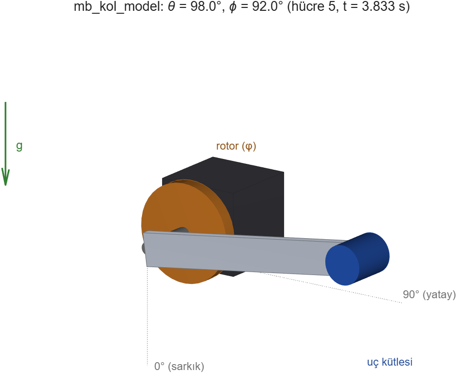
mb_kareler.m ile perspektiften çizildi (koşudan gelen φ, θ ve mb_param boyutları). Mekanizmanın kendi çerçevesinde kol düzlemi XY, yerçekimi −Y yönünde; rotor eşdeğer diski (turuncu) kolun 40 mm arkasında aynı eksende, üstündeki siyah çizgi φ'yi gösteriyor; gövde dünyaya sabit. Kesik çizgiler 0° (sarkık) ve 90° (yatay) yönleri.Yapı
| Blok | Multibody / Simscape bloğu | Parametreler / görevi |
|---|---|---|
| dunya, mekanizma | World Frame, Mechanism Configuration | yerçekimi [0 0 −g], g = 9,81 m/s² |
| T_eksen | Rigid Transform (dönme matrisi) | mekanizma çerçevesi: eklem ekseni (yerel Z) dünya −Y'sine, sarkık yön (yerel −Y) dünya −Z'sine; Mechanics Explorer'ın varsayılan bakışında kol düzlemi ekrana paralel. Aşağıdaki eksenler bu çerçevenin. |
| eklem_m, eklem_L | Revolute Joint (Z ekseni, ikisi aynı eksende) | tork girişi arayüzden; açı ve hız algılama; başlangıç S.x0(1), S.x0(3) (yüksek öncelikli hedef) |
| rotor | Cylindrical Solid, Custom eylemsizlik | kol tarafına indirgenmiş eşdeğer disk: Izz = JM = 0,0036 kg·m²; kütle merkezi eksende (yerçekimi torku yok) |
| cubuk | Brick Solid, Custom | 150 × 20 × 5 mm, 20 g, merkezi eksenden 75 mm |
| uc | Cylindrical Solid, Custom | r = 12 mm, h = 30 mm; mu ve d iki koşuldan çözülüyor (aşağıda) |
| govde | Brick Solid | dünyaya sabit motor kutusu, yalnız görüntü |
| isaret | Graphic (kütlesiz) | rotor diskinin ön yüzünde siyah nokta; φ'yi animasyonda görünür kılar, dinamiği değiştirmez |
| ara_m, ara_L | Rotational Multibody Interface | eklemi 1B mekanik ağa bağlıyor: eklem hızı → ağ düğümü, ağın torku → eklem |
| dis, bM, bL, tork_m, tork_L | Rotational Hard Stop, Rotational Damper, Ideal Torque Source | A.4 ile aynı (dişli teması, viskoz sürtünme, motor ve bozucu torku) |
| yuk, kontrolcu, durum | MATLAB Function, Unit Delay | A.4 ile aynı kod (blok_yuk.m, blok_ayrik.m) |
| cozucu | Solver Configuration | yerel Backward Euler, adım dt (aşağıda); global çözücü ode4, dt = 1e-4 s |
Dişli boşluğu neden 1B ağda? Multibody'nin Revolute Joint'inde boşluk yok. Bu yüzden rotor ve kol iki ayrı eklem; aralarındaki temas A.4'teki Rotational Hard Stop ile aynı. 3B taraf geometri, kütle ve yerçekimini, 1B ağ dişli temasını taşıyor. Yazılım benzetmesiyle: 3B taraf bir fizik motoru, 1B ağ ona arayüz (adaptör) üzerinden takılmış bir eklenti.
B.1 Geometrinin 1B modelle tutarlılığı
Yerçekimi çift sayılmıyor. A.4'te yerçekimi blok_yuk'ta −mgℓ sin θ torku olarak veriliyordu. Burada yerçekimi Multibody'den geldiği için model S.mgl = 0 ile koşuluyor; gerçek mgℓ M yapısıyla (mb_param.m) geometriye giriyor.
Çapraz doğrulamanın anlamlı olması için 3B gövdelerin eksene göre eylemsizliği ve yerçekimi momenti sim_param'daki değerlerle birebir aynı olmalı. Katılar "Custom" eylemsizlikle, iki koşuldan türetilerek veriliyor:
| Koşul | Denklem | Hedef |
|---|---|---|
| yerçekimi momenti | g (mr L/2 + mu d) = mgℓ | 0,2403 N·m |
| eksene göre eylemsizlik | Izz,çubuk + mr(L/2)² + Izz,uç + mu d² = JL | 0,0036 kg·m² |
Uç kütlesi tam çubuğun ucuna (d = L = 150 mm) konunca iki koşul birlikte sağlanamıyor: uç kütlesinin kendi eylemsizliği −6,7·10⁻⁷ kg·m² çıkıyor, yani fiziksel değil. Bu yüzden uç kütlesi mu ve eksene uzaklığı d birlikte çözüldü: mu = 153,9 g, d = 149,5 mm. Fark yarım milimetre; 1B modeldeki "20 g çubuk + ≈153 g uç kütlesi, 150 mm" düzeneğiyle tutarlı. Kontrolcü kapalıyken serbest bırakılan kolda iki model ilk 0,1 s boyunca aynı açıyı veriyor (90°'den bırakışta 0,01 s'de 89,8088° / 89,8088°). Bu, eylemsizliğin ve yerçekimi momentinin eşleştiğini gösteriyor.
B.2 Çözücü bulgusu: açık ode4 bu ağda yanlış
İlk koşuda 3B model 1B modelden belirgin şekilde ayrıştı: hücre 5'te genlik 11,4° (1B: 8,1°), hücre 3 ve 4'te rejim sınıfı farklı. Adımı 4 kat küçültmek sonucu değiştirmedi. Kaynağı ayırmak için iki deney yapıldı:
- Sönümsüz dişli salınımı: kontrolcü kapalı, bütün sönümler (cs, bM, bL) sıfır. 1B modelde dişli salınımının tepeleri sabit kaldı (3,164° → 3,075°, kolun dönüşüyle yavaş kayma); 3B modelde her çevrimde büyüdü (3,181° → 3,337°). Yani açık çözücü sisteme sayısal enerji katıyor. Salınım frekansı ise iki modelde aynı (periyot 0,084 s).
- Örtük çözücü: aynı hücre 5, değişken adımlı
ode23tveode15sile koşulunca iki model aynı sonucu verdi: 8,126° / 8,126°, 7,07 Hz.
Nedeni: Multibody eklemleri ve arayüzler ağda cebirsel denklem bırakıyor (arayüz düğümünün eylemsizliği yok, düğüm torkları anında dengelenmeli). MATLAB de koşuda "örtük çözücü önerilir" uyarısı veriyor. Çözüm: fiziksel ağa yerel Backward Euler çözücüsü (Solver Configuration, adım dt). Global çözücü ve kontrolcü ode4'te kalıyor, yani kontrolcü ve sensör katmanı öteki modellerle aynı. Yerel trapez ve bölümleme çözücüleri dt = 1e-4'te hücre 5 genliğinde %1,3 ve %2,8 saptı; Backward Euler %0,2'nin altında kaldı.
B.3 Çapraz doğrulama: 3B − 1B
Aynı 5 referans hücre, iki sensör düzeyi (A.4 ve dogrula_5a ile aynı ayar). Ölçüt: rejim sınıfı aynı; salınan hücrelerde (genlik ≥ 0,05°, rejim_sinifla'nın kendi eşiği) genlik ve frekans farkı %1'in altında. Genliği 0,05°'nin altında kalan, sönmüş sinyallerin frekansı gürültüden ibaret olduğundan bu hücrelerde yalnız sınıf ve θ(t) farkı verildi. Sütunlar: 3B (Multibody) / 1B (Simscape) / betik.
| Hücre | Sınıf | Genlik | Frekans | 3B − 1B fark | En büyük |Δθ| |
|---|---|---|---|---|---|
| İdeal sensör | |||||
| 1 (90°, 1,20, 1°) | düzensiz ×3 | 2,055 / 2,058 / 2,056° | 8,04 / 8,04 / 8,04 Hz | %0,16 · %0,01 | 0,10° |
| 2 (60°, 0,50, 1°) | denge ×3 | — | — | — | 9,0·10⁻⁴° |
| 3 (30°, 0,80, 0,2°) | sönümlü ×3 | ≤ 0,001° | — | — | 3,0°⁴ |
| 4 (90°, 0,95, 0,2°) | sönümlü ×3 | — | — | — | 6,2·10⁻³° |
| 5 (90°, 0,95, 5°) | çevrim ×3 | 8,130 / 8,143 / 8,135° | 7,08 / 7,07 / 7,08 Hz | %0,17 · %0,08 | 0,89° |
| Gerçekçi sensör (1 kHz, AS5600 12 bit + gecikme, enkoder, hız filtresi, Stribeck, ölü bant) | |||||
| 1 | sönümlü ×3 | 0,011 / 0,003 / 0,008° | — | — | 0,52° |
| 2 | denge ×3 | 0,024 / 0,035 / 0,027° | — | — | 0,28° |
| 3 | sönümlü ×3 | 0,034 / 0,031 / 0,048° | — | — | 1,78°⁴ |
| 4 | sönümlü ×3 | 0,011 / 0,009 / 0,009° | — | — | 0,04° |
| 5 | çevrim ×3 | 8,183 / 8,209 / 8,235° | 6,99 / 6,99 / 6,99 Hz | %0,31 · %0 | 1,19° |
⁴ Sarsıntılı hücre: 6,31 Hz bozucu t < 1 s boyunca kolu sallıyor; θ(t) farkı bu geçici bölümde açılıyor. 1B Simscape ile betik arasında da aynı hücrede 1,53° fark vardı (Bölüm 9); sınıf üç modelde aynı.
Sonuç: 10 koşunun 10'unda rejim sınıfı üç modelde aynı; salınan hücrelerde 3B ile 1B arasındaki genlik farkı en çok %0,31, frekans farkı en çok %0,08. Ölçütü bütün hücreler sağladı. Kalıcı çevrimde θ(t) farkının 1° mertebesine çıkması genlik ya da frekans farkı değil, faz kayması: 8 s boyunca biriken 0,89°'lik fark, 8,13° genlik ve 7,08 Hz'te yaklaşık 2,5 ms'lik kaymaya karşılık geliyor (0,89° / (8,13° · 2π · 7,08 Hz)).
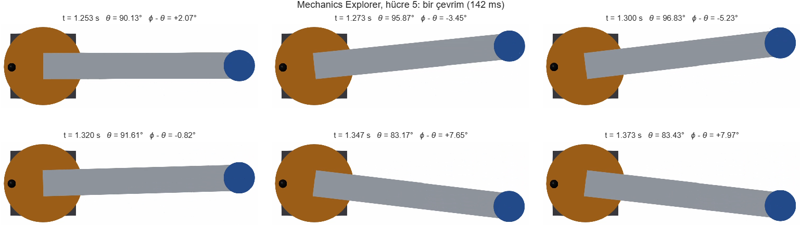
rapor/img/mb_animasyon.mp4; bu PDF'e de gömülü.mb_animasyon.mp4).-batch modunda açılmıyor; video arayüzlü MATLAB'da (matlab -r) smwritevideo ile alınıyor. Bu sürümde smwritevideo hemen dönüyor ama MP4 dosyasını ancak MATLAB boşta kalınca kapatıyor; fonksiyon içinde pause ile beklemek dosyayı yarım bırakıyor (MP4'ün moov bölümü yazılmıyor, dosya açılmıyor). mb_animasyon.m bu yüzden videoyu başlatıp dönüyor, bir zamanlayıcı dosya okunabilir olunca kareleri çıkarıyor (yaklaşık 1 dakika). Mechanics Explorer'ın varsayılan kamerası XZ düzlemine baktığı için mekanizma dünya çerçevesine göre döndürülerek kuruldu (T_eksen): eklem ekseni dünya Y'si, yerçekimi −Z. Yalnız koordinatlar değişti; 10 doğrulama koşusunun sayıları döndürmeden önceki modelle birebir aynı.mb_model_kur.m · geometri ve kütleler: mb_param.m · doğrulama: dogrula_mb.m → dogrula_mb_log.txt, θ(t) izleri dogrula_mb_izler.mat · animasyon: mb_animasyon.m → mb_animasyon.mp4, mb_me_kareler.png · 3B görünüm: mb_kareler.m (betikler simulasyon/simulink/, görseller rapor/img/)